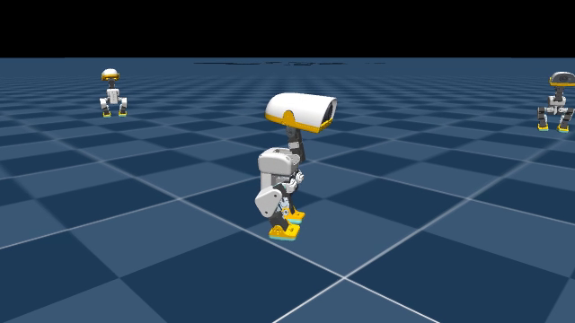
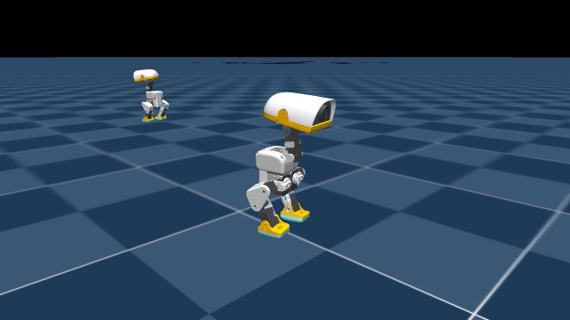

실험 당시 의존성 잠금 파일은 Linux 환경에 CUDA 패키지를 지정하고 있었습니다. Windows에 직접 설치했을 때는 CPU용 PyTorch가 선택되어 GPU 초기화에 실패했고, 이후 WSL2에서 환경을 구성했습니다. 파일 입출력 성능은 작업 파일의 위치에도 영향을 받으므로, WSL의 Linux 파일시스템과 /mnt/c 중 어느 경로를 사용하는지 실행 조건에 함께 기록하는 것이 좋습니다.
주요 용어
아래 용어는 학습 설정과 날짜별 기록에서 같은 의미로 사용합니다.
PPO
Proximal Policy Optimization. 환경과의 상호작용으로 수집한 데이터로 정책을 갱신하는 강화학습 알고리즘입니다. 이 실험의 클리핑 설정은 새 정책과 이전 정책의 행동 확률비가 목적함수에 미치는 영향을 제한해 급격한 갱신을 억제합니다. 설정값은 0.2입니다. 알고리즘 원문
정책
관측값을 입력받아 로봇의 행동 명령을 출력하는 신경망입니다. 이 실험에서는 관절 제어에 사용할 14차원 행동을 생성합니다.
액터 · 크리틱
액터는 행동을 선택하는 정책이고, 크리틱은 앞으로 얻을 보상의 기대값을 추정해 학습을 돕습니다. 비대칭 구성에서는 크리틱에만 시뮬레이터 내부 정보를 추가로 제공하며, 실행용 정책에는 액터를 사용합니다.
학습 회차
병렬 환경에서 데이터를 수집한 뒤 정책을 갱신하는 한 주기입니다. 한 회차에는 여러 시뮬레이션 스텝과 여러 번의 최적화가 포함됩니다. 에피소드 수나 물리 시뮬레이션 스텝 수와는 다릅니다.
병렬 환경
독립적으로 실행되는 시뮬레이션 인스턴스입니다. 4,096개 환경은 로봇 4,096개체의 경험을 병렬로 수집한다는 뜻입니다.
웜스타트
이미 학습된 정책을 초기값으로 사용해 새 과제를 학습하는 방법입니다. 이 기록에서는 보행 정책이나 착지 정책에서 점프 학습을 시작했습니다.
체크포인트
학습 중간에 저장한 모델 상태입니다. 중단된 학습을 재개하거나 회차별 성능을 비교할 때 사용합니다. 이 실험의 저장 간격은 250회차입니다.
커리큘럼
학습 진행에 따라 과제 난도나 보상·벌점의 적용 범위를 조절하는 방법입니다. 점프 실험에서는 낙상 벌점을 단계적으로 도입하는 구성을 사용했습니다.
엔트로피
행동 분포의 퍼짐 정도를 나타내는 지표입니다. 동일한 행동 정의와 척도에서 값이 감소하면 탐색 범위가 좁아졌을 가능성을 살펴봅니다. 연속 분포의 엔트로피는 음수가 될 수 있으므로 부호만으로 학습 실패를 판정하지 않습니다.
도메인 무작위화
마찰, 질량, 센서 오차 등의 조건을 바꾸며 학습하는 방법입니다. 특정 시뮬레이션 조건에 대한 과적합을 줄이려는 목적이며, 실제 로봇에서의 성능은 별도로 평가해야 합니다.
ONNX
학습한 신경망을 다른 실행 환경에서 사용할 수 있도록 저장하는 모델 형식입니다. 이 구성에서는 관측 정규화 연산을 포함해 정책을 내보냅니다.
학습 구성
학습 알고리즘은 PPO이며, rsl-rl 5.0.1과 mjlab의 매니저 기반 환경을 사용했습니다. 아래 표는 기본 보행 구성입니다. 점프 과제의 기준 궤적 입력처럼 과제별로 추가한 항목은 해당 날짜의 설정에 따로 적었습니다.
항목
값
항목
값
알고리즘
PPO (비대칭 액터-크리틱)
할인율
0.99
액터 관측
61차원
GAE λ
0.95
크리틱 관측
76차원 (특권 정보 포함)
PPO 클리핑
0.2
액터 신경망
61→512→256→128→14, ELU
엔트로피 계수
0.01
크리틱 신경망
76→512→256→128→1, ELU
학습률
1e-3, 적응형
행동 분포
가우시안, 스칼라 표준편차 (초기 1.0)
목표 KL
0.01
회차당 환경 스텝
24
에폭 / 미니배치
5 / 4
액터의 입력은 고유수용 관측 48차원과 명령 13차원으로 구성됩니다. 고유수용 관측에는 각속도, 중력 투영 벡터, 관절 위치·속도, 직전 행동이 포함됩니다. 명령은 속도 3차원, 머리 자세 4차원, 몸통 자세 6차원입니다. 지면 높이 스캔은 입력하지 않으므로, 이 보행 정책은 지형 형상을 직접 관측하지 않습니다.
도메인 무작위화는 세 시점에 적용했습니다. 실행 시작 시에는 마찰·엔코더 편향·질량중심·관성을, 환경 초기화 시에는 질량중심·관절 마찰·관절 추가 관성(armature)·자세를 변화시켰습니다. 학습 중에는 주기적으로 외부 밀기 힘을 가했습니다. 기본 구성의 일곱 커리큘럼 항은 모두 2,000회차에서 최종 단계에 도달하며, 이후에는 해당 설정을 유지합니다.
보행 과제의 보상은 15개 항으로 구성되며, 별도의 낙상·종료 벌점은 없습니다. 초기 점프 과제에는 낙상 벌점 −500을 적용했고, 9월 23~24일의 v5·v6·v7은 이를 단계적으로 도입하도록 설정했습니다. 그러나 9월 30일에 확인한 바로는 웜스타트 시 학습 스텝 카운터가 복원되어 이 설정이 적용되지 않았고, 세 실행 모두 첫 회차부터 −500이 걸려 있었습니다(9월 30일 기록). 단계적 도입이 실제로 작동하는 첫 실행은 9월 30일에 시작한 v8입니다.
피지컬 AI 관점에서의 실험 범위
이 실험은 로봇이 자신의 상태와 명령을 관측하고, 행동의 결과를 보상으로 받아 움직임을 학습하는 과정을 다룹니다. 병렬 시뮬레이션에서 경험을 수집하고, 보상 설계와 초기 정책을 바꾸며 보행·점프·기립 성능을 비교합니다.
핵심은 동작의 외형뿐 아니라 정책이 어떤 조건에서 동작을 습득하고, 유지하거나 잃는지를 확인하는 데 있습니다. 보상값, 성공률, 낙상률과 함께 평가 기준이 의도한 움직임을 제대로 구분하는지도 검토합니다.
학습 방식 — 사람이 설계한 보상으로 PPO 정책을 학습했습니다. 사람의 동작 데이터를 이용한 모방학습은 적용하지 않았습니다.
시각 입력 — 단안 RGB 카메라를 사용하는 학생 정책의 관측 인터페이스를 구성하고 센서 입력을 점검했습니다. 교사 정책의 행동을 학생에게 전달하는 증류 학습의 성능 결과는 아직 없습니다.
적용 범위 — 특정 로봇의 동작별 정책을 대상으로 합니다. 여러 로봇과 과제를 포괄하는 범용 모델의 성능을 평가한 기록은 아닙니다.
날짜별 실험 기록
2026-09-01
학습 환경 구축과 연속 실행 점검
수행 내용의존성을 설치하고 GPU 사용 여부를 확인했습니다. 5회차 길이의 짧은 실행을 다섯 차례 수행한 뒤, 1시간 연속 실행으로 온도와 처리량을 점검했습니다.
관측 결과1시간 동안 1,250회차를 수행했습니다. 이 구간에서 온도와 처리량이 안정적으로 유지되어 본 학습을 진행할 수 있는 상태임을 확인했습니다.
해석노트북 GPU의 장시간 처리량은 짧은 실행만으로 판단하기 어렵습니다. 본 실험에 앞서 연속 실행 구간을 두고 발열에 따른 속도 저하 여부를 확인할 필요가 있습니다.
실험 설정PPO · rsl-rl 5.0.1 평지 속도 추종 과제. 짧은 동작 점검 5회와 1시간 연속 실행으로 병렬 환경 수에 따른 처리량을 확인했습니다.
2026-09-02
보행 기준선 확보와 학습 후반의 성능 저하
수행 내용평지 속도 추종 과제를 두 시드에서 각각 약 6,000회차 학습하고, 한 시드는 9,500회차까지 연장했습니다. 험지 과제는 평지 정책에서 시작해 18,249회차까지 학습했습니다.
관측 결과험지 학습의 최종 평균 보상은 100.21이었습니다. 평지에서는 학습 후반에 성능이 저하됐으며, 6,000회차 체크포인트의 낙상률은 34~38%로 이전 체크포인트보다 높았습니다.
해석최종 체크포인트가 가장 좋은 정책은 아니었습니다. 낙상 벌점이 없는 보상 구성과 질량중심 무작위화 범위를 원인 후보로 검토했습니다. 질량중심 범위를 ±30mm까지 확대한 구성에서 지지 영역을 벗어날 가능성을 고려해 상한을 ±15mm로 조정했습니다. 다만 이 변경과 성능 저하의 인과관계는 분리 실험으로 확인하지 못했습니다.
실험 설정PPO · Mjlab-Velocity-Flat / -Rough 시드 42·43. 험지는 평지 정책에서 웜스타트했으며, 체크포인트는 250회차 간격으로 저장했습니다.
2026-09-03
계단 통과 한계 평가와 점프 높이 추정의 정정
수행 내용계단 높이를 바꾸며 기존 정책의 통과 성능을 평가했습니다. 점프의 물리적 가능성을 계산하고, 앉았다 일어서기 과제의 학습을 시작했습니다.
관측 결과낙상률 40% 미만을 기준으로 한 계단 높이의 한계는 약 1cm였습니다. 당시 학습 커리큘럼의 계단 범위를 성능 제한 요인으로 검토했습니다. 앉았다 일어서기는 13,000회차에서 한 사이클 성공률 66.4%를 기록했습니다.
정정·해석점프 높이의 상한을 처음에는 0.91cm로 계산했으나, 같은 날 계산 기준점의 오류를 확인했습니다. 발목 대신 발끝의 지면 접촉점을 기준으로 다시 계산한 낙관적 상한은 4~6cm였습니다. 이는 실제 도약 높이를 측정한 값이 아닌 계산상 추정치입니다. 초기 값과 정정 사유를 함께 남겼습니다.
실험 설정PPO · Mjlab-Stairs-Rough-MicroDuck · Mjlab-SitStand-Flat-MicroDuck 계단은 기존 정책의 조건별 평가입니다. 앉았다 일어서기는 2,048개 환경에서 새로 학습했으며, evaluate_squat.py의 128개 환경 평가 절차를 사용했습니다.
2026-09-04
제자리 점프의 학습 정체와 달리기 점프의 초기 결과
수행 내용제자리 점프를 8,000회차까지 학습했습니다. 도약이 나타나지 않아 보상을 수정한 v2를 구성하고, 달리기 점프 과제도 병행했습니다.
관측 결과제자리 점프에서는 8,000회차까지 이륙이 관측되지 않았습니다. 달리기 점프에서는 유효 점프 비율 11%, 평균 상승 높이 0.63cm를 기록했습니다.
해석14차원 행동 분포의 엔트로피가 −10.2까지 감소했습니다. 도약이 나타나지 않은 결과와 함께 보면 탐색 범위가 좁아졌을 가능성이 있습니다. 학습 시간을 늘리는 것과 별개로 행동 분포와 보상 구성을 점검할 필요가 있었습니다.
실험 설정PPO · Mjlab-Jump-Stand-MicroDuck v1·v2 · Mjlab-Jump-Run-MicroDuck v2 평지 보행 정책에서 웜스타트했습니다. 실행 스크립트는 jump_stand_run.sh, 주요 변수는 TASK·TAG·LOAD_RUN·LOAD_CK·ITERS입니다. 점프 명령에는 JumpTriggerCommand를 사용했습니다.
2026-09-05
기준 궤적의 도약 확인과 착지 안정성 문제
수행 내용웅크린 뒤 발끝으로 지면을 밀어내는 기준 궤적을 만들고, 피드백 없이 궤적을 재생하는 개루프 시험을 수행했습니다. 이 궤적을 관측에 추가한 v4 정책도 학습했습니다.
관측 결과개루프 시험에서 체공 시간 86밀리초, 도약 높이 4.75cm를 기록했으나 낙상률은 100%였습니다. 달리기 점프 v3는 유효 점프 비율 17%(주행 조건 약 22%), 최대 상승 높이 4.1cm를 기록했습니다. 제자리 점프 v4는 17,798회차에서 도약이 나타났다가 18,551회차에서 다시 감소했습니다.

달리기 점프 v3의 시뮬레이션 도약 장면.

제자리 점프 v4. 학습 회차에 따라 도약 행동이 달라졌습니다.
해석도약 후 낙상이 잦고 낙상 벌점이 −500인 조건에서는, 도약을 줄이는 행동이 보상 측면에서 유리해질 수 있다고 해석했습니다. 이에 착지를 먼저 학습하는 방안을 후속 가설로 제안했습니다. 이 가설은 9월 23~24일의 비교 실험에서 기대한 개선으로 이어지지 않았습니다.
실험 설정PPO · Jump-Stand-v3·v4 · Jump-Run-v3·v4 · Mjlab-Land-Flat-MicroDuck 준비 v4에는 기준 궤적을 관측에 추가했습니다. 개루프 시험은 정책 학습 없이 궤적을 물리 시뮬레이션에 적용했으며, 정책 평가는 점프 신호 1,536회를 기준으로 자체 평가기를 사용했습니다.
2026-09-06
속도 추종 보상 비교와 시각 관측 인터페이스 구성
수행 내용속도 추종 보상 커널의 폭을 좁힌 미세조정 정책을 대조군과 비교했습니다. 별도로 단안 RGB 카메라를 입력받는 학생 정책의 관측 인터페이스를 구성했습니다.
관측 결과보상 커널 변경에 따른 추종 성능의 개선은 관측되지 않았고, 제자리 회전 성능은 저하됐습니다. 외부 밀기에 대한 강건성은 대조군과 유사했습니다.
해석이번 조건에서는 보상 커널을 좁히면 추종 성능이 개선된다는 가설이 지지되지 않았습니다. 시각 기반 정책의 경우, 실행 시 사용할 수 없는 깊이 정보나 특권 상태가 학생 관측에 포함되지 않도록 입력 항목을 점검했습니다.
실험 설정PPO · 속도 추종 미세조정 A/B 비교 커널 분산만 0.1에서 0.025로 변경했고, 두 실험군 모두 커리큘럼이 최종 단계에 도달한 동일 조건에서 시작했습니다. lab_vision/에 단안 RGB 학생 관측 구성을 추가하고 정보 누출 여부를 점검했습니다.
2026-09-08
카메라 시야 가림의 원인 확인과 방향 수정
수행 내용렌더링된 카메라 영상이 지속해서 어둡게 나타나는 원인을 조사했습니다.
관측 결과모델의 머리 카메라가 턱 외피 안쪽에서 뒤쪽을 향하고 있었습니다. CPU 레이캐스트로 시선과 가림을 확인한 뒤 전방을 보도록 방향을 수정했습니다. 수정 후 영상의 평균 밝기는 0~255 척도에서 약 70이었습니다.
수정 전 · 09-06
수정 후 · 09-08
학생 정책용 64×48 RGB 관측의 수정 전후 비교입니다. 수정 전에는 카메라 시야가 외피 내부에 가려져 있었습니다.
해석영상 이상을 진단할 때는 카메라의 위치·방향과 시야 가림을 먼저 확인하는 것이 유용했습니다. 센서 배치의 문제를 렌더링 처리 과정의 오류와 구분할 수 있었습니다.
실험 설정카메라 진단 · StandUp-Flat 학습 준비 카메라 진단에는 정책 학습을 수행하지 않았습니다. 별도로 기립 과제를 2,048개 환경의 PPO 구성으로 준비하고, 학습 전에 평가 기준을 문서화했습니다.
2026-09-09
낙상 후 기립 평가: 엎드린 자세와 누운 자세에서 미달
수행 내용기립 과제를 5,000회차 학습하고, 사전에 정한 초기 자세와 성공 기준으로 평가했습니다.
관측 결과앉은 자세에서 일어서기는 98.4%, 선 자세 유지는 100%였습니다. 반면 엎드린 자세와 누운 자세의 성공률은 각각 0%였습니다. 엎드린 자세에서는 몸통을 약 35도까지 들어 올린 뒤 멈췄습니다. 낙상 후 기립이라는 목표에는 도달하지 못했습니다.
해석앉은 자세의 기립 성능만으로 낙상 복구 성능을 대표할 수는 없습니다. 초기 자세별 결과를 분리해 평가해야 합니다. 평가기 오류를 수정할 때는 원자료를 보존하고 별도의 재채점 도구를 만들어 결과를 다시 산출했습니다.
실험 설정PPO · StandUp-Flat · 5,000회차 recov_eval.sh로 평가했습니다. 초기 자세를 고정하고, 일어선 뒤 자세를 유지한 경우를 성공으로 판정했습니다.
2026-09-23 → 09-24
제자리 점프의 초기 정책 비교: 보행 계열 정책과 착지 정책
수행 내용중단했던 연속 실험을 재개했습니다. 착지 정책을 3,000회차 학습한 뒤, 동일한 점프 과제를 서로 다른 초기 정책에서 학습했습니다. v5는 기존 달리기 정책, v6는 새로 학습한 착지 정책에서 시작했습니다. 두 구성 모두 낙상 벌점을 커리큘럼으로 도입했습니다.
관측 결과체크포인트별로 나누어 보면 세 실행 모두 학습 중 유효 점프 비율이 감소했습니다. 이 저장소는 웜스타트 시 회차 번호를 이어받으므로 각 실행의 첫 체크포인트는 학습 전 초기 정책에 해당합니다.v5는 첫 체크포인트(16,000회차) 16.1%에서 마지막(21,996회차) 3.6%로 감소했습니다. 같은 실행의 대조군은 4.3%입니다. v4도 15.9%에서 7.0%로 감소했고 대조군은 6.3%입니다. v6는 첫 체크포인트(9,000회차) 3.2%에서 마지막(14,997회차) 5.2%였고 대조군은 5.3%입니다.즉 v5의 16.1%는 학습 결과가 아니라 초기 정책인 달리기 v3의 값이며, v6의 3.2%는 착지 정책의 값입니다.
해석이번 조건에서는 낙상 벌점의 단계적 도입과 착지 선행 학습 어느 쪽에서도 개선을 확인하지 못했습니다. 초기 정책을 기준으로 보면 v4와 v5는 학습이 진행될수록 초기 성능보다 낮아졌고, v6는 대조군 수준에서 크게 벗어나지 않았습니다.
이 항목은 처음에 v5의 16.1%를 벌점 커리큘럼의 성과로 기록했습니다. 후보 체크포인트를 고르는 기준을 학습 전에 정하지 않고 평가값이 가장 높은 체크포인트를 선택한 결과이며, 그 지점이 학습 전 초기 정책이었습니다. 정정합니다.학습 후반의 감소 원인은 분리되지 않았습니다. 벌점 커리큘럼의 종료 시점, 초기 정책과 과제의 불일치, 탐색 축소 가운데 어느 것인지는 추가 실험이 필요합니다. 시드 43의 단일 실행이므로 재현성도 확인해야 합니다.2026-09-30 정정. 이 항목의 v5·v6에는 낙상 벌점이 단계적으로 도입되지 않았습니다. 웜스타트 시 학습 스텝 카운터가 복원되어 벌점 가중치가 첫 회차부터 −500이었음을 학습 로그에서 확인했습니다. 따라서 "낙상 벌점의 단계적 도입에서 개선을 확인하지 못했다"는 문장은 "단계적 도입은 이 실행들에서 시험되지 않았다"로 고칩니다. 착지 선행 학습(v6)에 관한 관측은 그대로 유효합니다. 자세한 경위는 9월 30일 기록에 있습니다.
실험 설정PPO · Mjlab-Land-Flat-MicroDuck 3,000회차 → Mjlab-Jump-Stand-v5 · Jump-Run-v5 각 6,000회차, 초기 정책을 바꿔 두 차례 실행 4,096개 환경 · 시드 43 · 총 20시간 7분. chain_resume.sh는 원본에서 v4 완료 대기만 제거해 새 이름으로 배포한 사본입니다. Windows 작업 스케줄러로 대화형 세션과 분리해 실행했습니다. v5·v6는 이 기록에서 초기 정책을 구분하기 위한 표기입니다. 평가는 제자리 조건에서만 수행했고, 후보 체크포인트 선택 기준은 사전에 정의하지 않았습니다.
2026-09-24
단일 변수 비교 v7: 기준 궤적 보상의 강도는 초기 하락의 원인이 아니었음
수행 내용v5의 초기 하락 원인으로 "강화된 기준 궤적 보상"을 가설로 세우고, 사전 등록 계획서를 먼저 작성한 뒤 실험했습니다. v7은 v5에서 기준 궤적 보상 하나만 v4 값으로 되돌린 구성입니다(가중치 5.0 → 3.0, 허용 폭 σ 0.18 → 0.25 rad). 초기 정책(달리기 점프 v3의 15,997회차), 환경 수 4,096, 시드 43, 6,000회차는 v5와 같습니다. 판정 방법도 미리 고정했습니다. 사후 최고값 선택을 금지하고, 250회차 간격 체크포인트 25개 전량을 같은 평가기로 재채점해 곡선으로 비교하며, 대표값은 최종 체크포인트로 정했습니다. v5도 같은 방식으로 25개를 재채점했습니다.
관측 결과초기 정책의 유효 점프 비율은 v5 16.4%, v7 15.1%였고(같은 정책을 두 번 평가한 값이므로 차이는 평가 잡음), 최종 체크포인트에서는 v5 4.2%, v7 6.2%였습니다. 학습 시작 후 250회차 시점에는 v5 9.1%, v7 6.0%로, 두 구성 모두 첫 250회차 안에 물려받은 점프율의 약 60%를 잃었습니다. 경과 250~1,250회차 평균은 v5 9.9%, v7 5.5%였습니다. v7의 후반 곡선은 3.1% → 8.7% → 4.8% → 8.1% → 6.2%로 진동했습니다. 두 실행 모두 정상 종료했고 체크포인트 25개가 모두 남았습니다.
해석사전 등록한 지지 조건은 "하락 폭이 뚜렷이 작고, 특히 초반 구간의 급락이 완화된다"였습니다. 최종값 차이는 2.0%p로 판단 보류 경계(2%p)에 걸렸고, 초반 하락은 v7이 오히려 더 컸으므로 가설은 지지되지 않았습니다. 기준 궤적 보상의 강도는 초기 하락의 원인이 아닙니다. 이 시점의 보고서는 "이 구간의 낙상 벌점은 0이므로 벌점도 원인이 아니다"라고 적었으나, 이 전제는 9월 30일에 틀린 것으로 확인됐습니다(다음 항목).
실험 설정PPO · Mjlab-Jump-Stand-v7-MicroDuck · 6,000회차 · 4,096개 환경 · 시드 43 · 초기 정책 warm_run_v3/model_15997.pt 계획서 experiments/plans/20260924-ref-strength.yaml, 평가 evaluate_jump.py(제자리 조건, 평가 시드 1000, 신호 1,536회), 재채점 결과 reports/jump_eval_v5_dense.csv·jump_eval_v7_dense.csv. 시드 1회이므로 재현성은 주장하지 않습니다.
2026-09-30
v5·v6·v7의 벌점 커리큘럼은 작동하지 않았음: 웜스타트 시 스텝 카운터 복원이 원인, 수정 후 v8·v9 시작
수행 내용9월 24일까지의 결론을 다시 검토하기 위해 v5·v7의 학습 로그와 웜스타트에 쓴 체크포인트 파일을 직접 읽었습니다. 이어서 최근의 점프 학습 방법을 조사했고(아래 참고 자료), 발견한 결함을 고친 뒤 새 실행 두 개를 시작했습니다.
관측 결과벌점 커리큘럼이 한 번도 적용되지 않았습니다. 학습 도구(mjlab)의 러너는 체크포인트를 불러올 때 환경의 누적 스텝 카운터도 함께 복원합니다. 이는 중단한 학습을 재개할 때 커리큘럼 위치를 보존하기 위한 기능입니다. 그런데 v5·v7의 초기 정책 warm_run_v3/model_15997.pt에는 카운터 384,000이 저장돼 있고, 낙상 벌점 커리큘럼의 단계 경계는 36,000·60,000·84,000스텝(1,500·2,500·3,500회차)입니다. 복원된 카운터가 모든 경계를 넘어 있었으므로 벌점 가중치는 첫 회차부터 −500이었습니다. v6도 착지 정책의 카운터 216,000을 물려받아 같은 상태였습니다.
학습 로그가 이를 직접 보여 줍니다. v5와 v7 모두 첫 회차(15,997)에 Curriculum/fall_penalty_weight: -500이 기록돼 있고, 16,010회차에는 낙상 종료 4.2%와 함께 벌점 보상 −0.0104가 집계돼 있습니다. 가중치가 0이었다면 벌점 보상은 0이어야 합니다. 같은 이유로 도약 높이 보상의 척도도 계획한 2 → 4 → 6cm 단계 대신 처음부터 6cm였습니다.따라서 9월 23~24일의 세 실행은 모두 v4와 같은 "첫 회차부터 −500" 조건에서 학습했습니다. v4에서 관측된 실패 양상(도약을 시도하다 벌점을 받고 도약을 포기)이 v5·v7에서 반복된 것이며, 9월 24일 보고서의 "벌점이 0인 구간에서도 하락했으므로 벌점은 원인이 아니다"라는 결론은 철회합니다. 원인이 벌점인지는 아직 확정되지 않았고, 아래의 v8이 그것을 검정합니다.
개선 사항1. 커리큘럼 기준 시점 수정. 랩 전용 러너 LabJumpRunner를 추가했습니다. 체크포인트를 불러온 직후의 스텝 카운터를 "실행 시작점"으로 기록하고, 커리큘럼 단계는 그 시작점부터의 경과 스텝으로 계산합니다. 기존 태스크(v5·v7 등)의 등록은 옛 러너를 유지해 이미 실행한 결과를 그대로 재현할 수 있게 두었습니다.
2. v8 — 벌점 커리큘럼을 실제로 적용한 v5. 보상 구성·초기 정책·환경 수·시드·회차는 v5와 같고, 벌점 가중치만 계획대로 0(시작) → −100(1,500회차) → −300(2,500회차) → −500(3,500회차)으로 진행합니다. 도약 높이 척도는 v5 실행이 실제로 가졌던 6cm로 고정해, v5 대비 바뀐 것이 벌점 스케줄 하나가 되도록 했습니다.3. v9 — v8에 기준 상태 초기화 추가. 에피소드를 초기화할 때 25%는 기준 궤적의 웅크린 자세에 위 방향 속도 0.3~0.6 m/s를 주어 밀어 올리는 순간에서 시작하고, 15%는 선 높이보다 2~5cm 높은 공중에서 시작하며(수직 속도 ±0.2 m/s), 나머지 60%는 기존처럼 서서 시작합니다. 점프 신호의 시계는 각 상태에 맞는 기준 궤적 시점(0.40초, 0.55초)으로 맞춥니다. 정책이 스스로 도약에 도달하기 전에도 착지와 밀기 상태를 직접 연습하게 하려는 것으로, DeepMimic의 기준 상태 초기화와 기반 코드 저장소 PR #14의 60/25/15 혼합 비율을 따랐습니다. 관측 차원(61)은 바꾸지 않았습니다.4. 검증. 구성 검사 54항목을 CPU에서 통과했습니다(v8과 v5의 차이가 도약 척도 고정뿐인지, v9와 v8의 차이가 초기화 이벤트 하나뿐인지, 카운터 384,000에서 단계가 0부터 시작하는지 등). 64개 환경 × 5회차의 짧은 실행에서 v8은 첫 회차 벌점 가중치 0.0을, v9는 공중에서 시작한 환경 덕분에 첫 회차부터 체공·상승 보상이 집계되는 것을 확인했습니다. 두 실행 모두 낙상 종료 0, NaN 0이었습니다.5. 실행. 17시 36분에 v8을 4,096개 환경으로 시작했습니다. 학습 로그에 시작점 384,000 기록과 첫 회차 벌점 가중치 0.0000이 남았고, 회차당 약 3초로 진행 중입니다. v8 6,000회차 → 25개 체크포인트 전량 재채점 → v9 6,000회차 → 재채점 순서로 약 9시간 30분이 걸릴 예정이며, 결과는 다음 기록에 적습니다.판정 기준(사전 등록). v8에서 벌점이 0인 경과 250~1,500회차의 평균 유효 점프 비율이 v5의 같은 구간(9.9%)을 뚜렷이 넘고 첫 250회차의 하락이 v5(−7.3%p)보다 작으면, 초기 하락의 원인이 벌점이었다는 가설을 지지합니다. v8도 같은 폭으로 하락하면 벌점은 원인이 아니며, 다음 검정은 초기 정책과 과제의 불일치(평지 보행 정책 웜스타트 대 무작위 초기화)입니다. v9는 v8보다 최종값이 2%p 이상 높고 낙상률이 나쁘지 않을 때 지지로 판정합니다. 두 실행 모두 시드 1회이므로 재현성은 주장하지 않습니다.
실험 설정PPO · Mjlab-Jump-Stand-v8-MicroDuck → Mjlab-Jump-Stand-v9-MicroDuck · 각 6,000회차 · 4,096개 환경 · 시드 43 · 초기 정책 warm_run_v3/model_15997.pt · 대조군 v5 실행 계획서 experiments/plans/20260930-curriculum-origin.yaml, 코드 lab_tasks/jump_env_cfg.py·lab_tasks/lab_runner.py, 검사 tests/test_jump_v8_cfg.py, 실행 스크립트 scripts/run_v8_v9.sh(Windows 작업 스케줄러, 실행당 6시간 제한). 참고 자료: 기반 코드 저장소 PR #14(두 발 호핑, 초기 상태 혼합 60/25/15, 약 3cm), PR #28(위상 기반 주기 호핑, 웅크림 → 이륙 속도 → 체공 순의 단계 보상), microduck-jump(1 → 6cm 높이 밴드 커리큘럼, 밴드 내 비율로 체크포인트 선택), happy-hop(실물 로봇에서 검증된 호핑), DeepMimic(기준 상태 초기화), Li 외, RSS 2023(Cassie 점프의 다단계 학습). 이들 중 실물에서 검증된 것은 happy-hop뿐이며, 나머지는 시뮬레이션 보고입니다.
2026-10-02 (10월 4일 작성)
v8·v9 판정: 낙상 벌점은 초기 하락의 원인이 아님(반박), 기준 상태 초기화는 하락을 늦추지만 끝까지 유지되지 않음(판단보류)
수행 내용9월 30일 저녁에 시작한 v8(6,000회차) → v9(6,000회차) 자동 체인이 10월 1일에 끝났습니다. 두 실행의 체크포인트 25개(250회차 간격, 첫 체크포인트는 학습 전 정책)를 전량 같은 조건으로 재채점했습니다(512개 환경 × 1에피소드 = 점프 신호 1,536회, 제자리 조건, 평가 시드 1000). 9월 30일에 사전 등록한 기준과 대조해 판정했고, 판정은 10월 2일에 실험 저장소에 기록했으나 이 페이지에는 오늘 반영합니다.
관측 결과경과 회차별 유효 점프 비율(%). v5·v7은 같은 방식으로 재채점한 값입니다.
경과 회차
v5
v7
v8 (벌점 커리큘럼 실제 적용)
v9 (v8 + 기준 상태 초기화)
0 (학습 전)
16.4
15.1
13.6
15.8
250
9.1
6.0
6.6
10.4
500
12.8
5.4
7.0
11.0
1,500
6.0
4.2
5.6
5.8
3,500
4.4
4.1
4.0
4.0
최종 5,996
4.2
6.2
4.4
6.0
벌점 가설(H1) 반박. 벌점 가중치가 실제로 0에서 시작한 v8도 첫 250회차에 −7.0%p(13.6 → 6.6%) 떨어졌습니다. v5의 하락 폭 −7.3%p와 같습니다. 벌점이 0인 경과 250~1,500회차의 평균 유효 점프 비율도 v8 6.8%로 v5의 9.3%보다 낮았습니다. 사전 등록 기준("v8의 벌점 0 구간 평균이 v5의 9.9%를 뚜렷이 넘고 첫 250회차 하락이 v5보다 작으면 지지")의 두 조건을 모두 충족하지 못했습니다.기준 상태 초기화(H2) 판단보류. v9의 최종 유효 점프 6.0%는 v8의 4.4%보다 +1.6%p 높지만 사전 등록 기준 +2.0%p에 미치지 못했습니다. 초반 차이는 뚜렷합니다(250회차 10.4% 대 6.6%, 500회차 11.0% 대 7.0%). 신호당 낙상률은 v9 0.39%, v8 0.52%였습니다. 초기 하락을 늦추지만 3,500회차 이후에는 두 실행이 4.0%로 같아집니다.네 실행(v5·v7·v8·v9) 모두 학습이 진행될수록 물려받은 점프 성능을 잃고 평지 보행 정책의 값(약 4~6%) 근처로 수렴했습니다. 벌점 스케줄, 기준 궤적 보상 강도, 기준 상태 초기화 가운데 어느 것도 이 수렴을 바꾸지 못했습니다. 모두 시드 1회이므로 재현성은 주장하지 않습니다.
개선 사항1. 9월 30일 기록의 미확정 사항을 확정. 9월 30일에는 "초기 하락의 원인이 벌점인지는 미확정이며 v8이 검정한다"고 적었습니다. 검정 결과 벌점은 원인이 아닙니다. 커리큘럼 기준 시점 수정(LabJumpRunner)은 그대로 유효하며, 벌점 가중치가 계획대로 0 → −100 → −300 → −500으로 진행된 것은 학습 로그로 확인했습니다.
2. 다음 변수는 초기 정책. 네 실행은 모두 달리며 뛰는 정책(warm_run_v3/model_15997)에서 출발해 제자리 과제를 학습했고, 모두 같은 양상으로 무너졌습니다. 출발 정책과 과제의 불일치가 원인이라는 가설을 (a) 평지 보행 정책 웜스타트, (b) 무작위 초기화로 검정합니다. 첫 250회차 하락이 달리기 정책 출발에서만 나타나면 불일치가 원인입니다.3. 바뀌지 않은 것. 제자리 점프의 기준선은 여전히 없습니다. 대조군(평지 보행 정책 제로샷)을 학습 종료 시점에 넘는 제자리 점프 실행은 v1~v9 중 하나도 없습니다.
실험 설정PPO · Mjlab-Jump-Stand-v8-MicroDuck, Mjlab-Jump-Stand-v9-MicroDuck · 각 6,000회차 · 4,096개 환경 · 시드 43 · 초기 정책 warm_run_v3/model_15997.pt · 대조군 v5(v8의 대조군), v8(v9의 대조군) 계획서 experiments/plans/20260930-curriculum-origin.yaml, 재채점 결과 reports/jump_eval_v8_dense.csv·reports/jump_eval_v9_dense.csv(v5·v7은 jump_eval_v5_dense.csv·jump_eval_v7_dense.csv), 판정 기록 nightly/LOG.md. 표의 값은 이 CSV들에서 읽었습니다.
2026-10-04
자동 야간 실험 첫 밤: 초기 정책 검정(v10)을 준비했으나 스케줄러의 명령 전달 결함으로 학습이 시작되지 않음
수행 내용00시에 자동 세션이 시작됐습니다. 1단계(00:00~00:11)에서 (1) 최근 자료를 조사했습니다 — 사족 로봇의 점프를 보행 정책의 파인튜닝이 아니라 기준 상태 초기화로 따로 학습한 논문(arXiv 2510.24584), 기반 코드 저장소의 PR 목록(점프·웜스타트 관련 새 PR 없음), 커뮤니티의 점프 정책 모음(awesome-microduck). (2) 후보 세 가지(평지 보행 정책 웜스타트, 무작위 초기화, PR #28의 단계 보상)를 비교해 10월 2일 판정이 가리킨 첫 검정인 평지 보행 정책 웜스타트를 골랐습니다. (3) 계획서를 사전 등록하고, v9 환경 구성을 그대로 복제한 새 태스크 v10을 등록했으며(초기 정책만 다름), 구성 동일성 검사 28항목을 CPU에서 통과했습니다. (4) 64개 환경 × 5회차의 짧은 실행에서 정상 종료(NaN 없음), 커리큘럼 시작점 144,000(평지 보행 체크포인트의 스텝 카운터), 점프 보상 집계를 확인했습니다. (5) 런처를 작성해 00:11에 커밋했습니다.
2단계(판정)가 00:12에 시작됐습니다. 계획대로라면 03:42 이후여야 합니다. 학습이 한 번도 실행되지 않은 것을 확인하고 원인을 찾았습니다.
관측 결과학습 미실행. 스케줄러 로그에 런처 호출 00:11:39, 자식 프로세스 종료 00:12:39가 기록돼 있고, 런처가 써야 할 실행 로그는 0바이트, 체크포인트 0개, 평가 CSV 없음, GPU 메모리 1,604 MiB(유휴)였습니다.
원인. 스케줄러(Windows PowerShell 5.1)는 Start-Process wsl.exe -ArgumentList '-d',<배포판>,'--','bash','-lc',$cmd로 런처를 띄웁니다. 이 cmdlet은 공백이 든 인자를 따옴표로 감싸지 않으므로 bash는 $cmd의 첫 단어 DEADLINE_EPOCH=…만 명령으로 받았고(변수 대입이라 즉시 종료 코드 0), 나머지(bash '<런처>' >> '<로그>')는 쓰이지 않는 위치 인자가 됐습니다. 무해한 명령(touch /tmp/x)으로 같은 호출을 재현하면 touch: missing file operand가 나오고 파일이 생기지 않습니다. 명령을 파일에 적고 공백 없는 인자 bash <파일>로 띄우면 정상 동작합니다.판정: 미완(미실행). 측정값이 없으므로 사전 등록 조건을 대조할 수 없습니다. 가설(출발 정책과 과제의 불일치가 초기 하락의 원인)은 검정되지 않았습니다.
개선 사항1. 실험 변수(미측정). 바꾼 것은 초기 정책 하나입니다 — warm_run_v3/model_15997(달리기 점프, 달리기 조건 22.3%) → warm_flat_s43/model_5999(평지 보행, 제자리 점프 제로샷 4.3~6.1%; 평가에 쓴 태스크 구성에 따라 다름). 보상·커리큘럼·초기화 이벤트·옵티마이저·환경 수·시드는 v9와 같습니다. 효과는 측정되지 않았습니다.
2. 인프라 결함 두 건째. 자동 루프는 10월 3일(프로세스 검사가 자기 자신을 잡아 GPU를 "사용 중"으로 판단, 당일 수정)과 10월 4일(이 결함)에 이틀 연속 학습을 시작하지 못했습니다. 두 결함 모두 준비 단계의 점검이 스케줄러와 다른 경로(WSL 안에서 직접 실행)로 이루어져 드러나지 않았습니다. 수정본 스케줄러는 명령을 파일에 적고 공백 없는 인자로 호출하도록 바꿨고, 실행 중인 스크립트를 덮어쓰지 않는 원칙에 따라 별도 파일로 두어 사람이 교체합니다. 교체 전에는 다음 밤도 같은 지점에서 실패합니다.3. 사전 등록 조건은 그대로 둡니다. 지지: 최종 유효 점프 ≥ 8.0%이고 경과 1,500~3,000회차 평균이 v9의 같은 구간 평균 5.55%를 넘고 낙상률 ≤ 1.0%. 반박: 최종 ≤ 6.0%이고 구간 평균 ≤ 5.55%. 그 사이거나 조건이 갈리면 판단보류. 같은 계획을 다음 밤에 재시도하며 조건을 완화하지 않습니다.4. 바뀌지 않은 것. 제자리 점프의 기준선은 없습니다. 오늘 새로 측정된 값은 없습니다.
실험 설정PPO · Mjlab-Jump-Stand-v10-MicroDuck(v9 구성 복제) · 예정 약 3,000회차(00:35~03:35 창에서 산정; v5~v9의 6,000회차의 절반이므로 대조군 v9는 같은 경과 회차에서 읽음: 경과 3,000 = 4.43%, 경과 1,500~3,000 평균 5.55%) · 4,096개 환경 · 시드 43 · 초기 정책 warm_flat_s43/model_5999.pt · 실제 실행 0회차 계획서 experiments/plans/20261004-init-policy-flat.yaml, 판정 보고서 experiments/reports/20261004-init-policy-flat.md, 검사 tests/test_init_policy_flat.py, 런처 nightly/2026-10-04/tonight.sh, 짧은 실행 로그 logs/smoke_20261004_init-policy-flat.log, 스케줄러 로그 microduck-nightly/logs/nightly_2026-10-04.log. 대조군 값은 reports/jump_eval_v9_dense.csv, 초기 정책의 제로샷 값은 reports/jump_eval_jump_stand_v5_s43.csv(4.3%)·jump_eval_jump_stand_v9_s43.csv(6.1%). 참고 자료: arXiv 2510.24584(사족 로봇의 점프·보행 분리 학습, 기준 상태 초기화), microduck_rl PR 목록, awesome-microduck. 모두 시뮬레이션 보고입니다.
2026-10-05
자동 야간 실험 첫 학습: 초기 정책 검정(v10, 평지 보행 정책에서 시작) — 판단보류, 곡선은 "수렴 지점은 레시피가 정한다"는 대립 가설과 일치
수행 내용10월 4일에 사전 등록한 계획을 조건 변경 없이 재시도했습니다. 00:00~00:05 준비 단계에서 (1) 기반 코드 저장소의 최신 커밋(점프·웜스타트 변경 없음)과 커뮤니티 점프 정책 목록(변화 없음)을 다시 확인하고, (2) 스케줄러 결함(공백이 든 인자를 따옴표 없이 전달)을 실행 중인 스크립트를 고치지 않고 우회했습니다 — WSL 로그인 셸 설정에 "인용 없이 들어온 런처 호출을 복원해 실행하는" 작은 블록을 추가하고 스케줄러와 같은 호출로 검증했습니다. (3) 64개 환경 × 5회차 짧은 실행(정상 종료, 커리큘럼 시작점 144,000)을 다시 통과시켰습니다.
00:05부터 02:39까지 v10을 3,750회차 학습했습니다(정상 종료, NaN 없음, 마감 03:35 전). 낙상 벌점 커리큘럼은 학습 로그에서 0 → −100(경과 1,500) → −300(2,500) → −500(3,500)으로 계획대로 진행된 것을 확인했습니다. 02:39~02:46에 체크포인트 17개(학습 전 1개 + 250회차 간격 16개)를 같은 조건으로 전량 재채점했습니다(512개 환경 × 1에피소드 = 점프 신호 1,536회, 제자리 조건, 평가 시드 1000). 마지막 체크포인트의 재생 영상 기록은 200초 제한에 걸려 실패했습니다(영상 없음).
관측 결과경과 회차별 유효 점프 비율(%). v9는 같은 레시피를 달리기 점프 정책에서 시작한 대조군이며 같은 경과 회차의 값입니다.
경과 회차
0 (학습 전)
250
500
750
1,000
1,500
2,000
2,500
3,000
3,500
최종 3,749
v10 (평지 보행 정책에서 시작)
6.05
5.60
5.01
8.59
4.17
3.91
3.58
4.04
4.69
3.65
7.36
v9 (달리기 점프 정책에서 시작)
15.76
10.42
11.00
11.00
6.77
5.79
5.79
6.12
4.43
3.97
6.71 (3,750)
사전 등록 조건 대조. (a) 최종 체크포인트 유효 점프 ≥ 8.0% — 7.36%, 미충족. (b) 경과 1,500~3,000회차 평균이 v9의 같은 구간 5.55%를 넘음 — 4.61%, 미충족. (c) 신호당 낙상률 ≤ 1.0% — 최종 0.26%, 전 구간 최대 0.78%, 충족. 반박 조건(최종 ≤ 6.0%이고 구간 평균 ≤ 5.55%)은 최종값 하나 때문에 성립하지 않습니다. 사전 등록된 "최종값이 6.0~8.0% 사이이거나 조건이 갈리는 경우"에 해당하므로 판단보류입니다. 조건은 사후에 바꾸지 않았습니다.곡선이 말하는 것. 첫 250회차 하락은 없었습니다(6.05 → 5.60%, −0.45%p). 그러나 잃을 점프 성능이 애초에 없었으므로 이것은 두 가설을 가르지 못합니다. 가설의 두 번째 예측(과제가 일치하므로 v9의 같은 경과 구간보다 높이 올라간다)은 틀렸습니다 — 경과 250~3,000의 12개 지점 중 v10이 v9를 넘은 곳은 2곳(2,250회차 5.92 대 4.56, 3,000회차 4.69 대 4.43)뿐이고 구간 평균은 0.94%p 낮습니다. 학습된 16개 체크포인트는 모두 3.6~8.6%(평균 5.2%)로 v8·v9의 후반 구간(4~6%)과 같은 띠에 있습니다. 최종값 7.36%는 바로 앞 체크포인트 3.65%, 그 앞 6.45%에 이어 튄 값이며 이 실행의 체크포인트 간 변동폭 안에 있어 상승으로 읽지 않습니다. 학습 로그에서는 평균 최고 높이가 0.0183m(회차 6000) → 0.0031m(6250) → 0.0024m(이후)로, 체공 시간 평균이 0.085 → 0.039로 첫 250회차 안에 줄었고, 낙상 벌점이 0인 처음 1,500회차에 이미 "넘어지지 않고 서 있기"로 수렴했습니다. 최대 상승 높이도 학습 전 2.10cm를 학습 중 어느 체크포인트도 넘지 못했습니다(최종 1.24cm). 시드 1회이므로 재현성은 주장하지 않습니다.
개선 사항1. 실험 변수와 측정된 효과. 바꾼 것은 초기 정책 하나입니다 — warm_run_v3/model_15997(달리기 점프) → warm_flat_s43/model_5999(평지 보행). 효과: 초기 하락은 사라졌지만(잃을 것이 없었음) 학습 종료 시점의 값은 대조군 v9의 같은 경과(6.71%)와 +0.65%p 차이, 경과 1,500~3,000 평균은 −0.94%p로 같은 띠입니다. 세 실행(v8·v9·v10)이 서로 다른 출발점에서 같은 4~6% 띠로 모였다는 점에서, 수렴 지점을 정하는 것은 초기 정책이 아니라 보상 레시피라는 대립 가설 쪽에 가깝습니다. 다만 사전 등록 기준으로는 반박이 아니라 판단보류입니다.
2. 자동 루프가 처음으로 학습까지 수행. 10월 3일·4일의 두 결함 뒤 첫 완주입니다(준비 5분, 학습 2시간 34분, 재채점 7분, 판정 기록). 스케줄러 본체는 아직 교체되지 않았고 우회 블록이 대신 동작하고 있습니다. 교체 후에는 우회 블록이 실행되지 않습니다.3. 측정 방법 두 가지를 고칩니다(다음 계획서부터). 첫째, 대조군의 "학습 전" 값은 같은 태스크 구성으로 잰 값만 씁니다. 계획서가 인용한 평지 보행 정책의 제로샷 4.2%는 v5 구성에서 잰 값이고, v10 구성(기준 상태 초기화 60/25/15 포함)에서 같은 체크포인트는 6.05%입니다. 평가 환경의 리셋 분포가 점프 판정 수를 바꾸므로 구성이 다른 값은 비교 대상이 아닙니다. 둘째, 단일 최종 체크포인트는 대표값으로 잡음이 큽니다(이 실행의 마지막 세 값 6.45 / 3.65 / 7.36%, 인접 차이 최대 4.4%p). 판정은 계획서대로 최종값으로 했지만, 다음 계획서부터 "마지막 4개 체크포인트 평균"(이번 실행 5.28%)을 보조 대표값으로 사전 등록합니다. 측정 오류 목록에 10항을 추가했습니다.4. 다음에 바꿀 한 가지. 같은 가설의 두 번째 검정인 무작위 초기화(웜스타트 없음, v9 레시피·예산 동일)입니다. 세 출발점(달리기 점프·평지 보행·무작위)이 모두 같은 띠로 모이면 다음 변수는 보상 구조(PR #28의 단계 보상 또는 높이 밴드 커리큘럼)로 갑니다. v10을 6,000회차까지 잇는 안은 학습 도구가 재개 시 커리큘럼 시작점을 다시 잡아 벌점이 0부터 재시작되므로 시작점 고정 옵션(새 변수)이 먼저 필요해 오늘은 선택하지 않았습니다.5. 바뀌지 않은 것. 제자리 점프의 기준선은 여전히 없습니다. 학습 종료 시점에 대조군 띠(약 4~6%)를 뚜렷이 넘는 제자리 점프 실행은 v1~v10 중 하나도 없습니다.
실험 설정PPO · Mjlab-Jump-Stand-v10-MicroDuck(v9 구성 복제, 초기 정책만 다름) · 3,750회차(5999 → 9748; v9의 6,000회차의 62%이므로 같은 경과 회차끼리만 비교) · 4,096개 환경 · 시드 43 · 초기 정책 warm_flat_s43/model_5999.pt · 대조군 v9(2026-09-30_22-25-37_jump_stand_v9_s43) · 실행 2026-10-05_00-05-43_jump_stand_v10_s43, 체크포인트 16개 계획서 experiments/plans/20261004-init-policy-flat.yaml(10-05 재시도·사후 기록 추가), 판정 보고서 experiments/reports/20261005-init-policy-flat.md, 재채점 결과 reports/jump_eval_v10_dense.csv(표의 v10 값), 대조군 reports/jump_eval_v9_dense.csv(표의 v9 값), 학습 로그 logs/train_jump_stand_v10_s43.log(커리큘럼·높이·체공 값), 실행 로그 logs/nightly_2026-10-05_run.log, 런처 nightly/2026-10-05/tonight.sh. 참고 자료: arXiv 2510.24584, microduck_rl 커밋 목록, awesome-microduck. 모두 시뮬레이션 보고입니다.
2026-10-07
초기 정책 검정 (b): 무작위 초기화(v11)는 250회차에 유효 점프 24.67%에 도달한 뒤 단조 감소해 같은 4~7% 띠로 수렴 — 판단보류, 감소 구간은 기반 코드 커리큘럼의 상승 구간과 겹침
수행 내용10월 5일 기록의 다음 후보였던 같은 가설의 두 번째 검정입니다. v9 레시피(기준 궤적, 기준 상태 초기화 60/25/15, 낙상 벌점 커리큘럼 0 → −100 → −300 → −500)를 그대로 두고 초기 정책만 바꿨습니다 — 이번에는 웜스타트 없이 무작위 초기화에서 시작합니다. 00:00~00:35 준비 단계에서 (1) 2025~2026년 문헌(arXiv 2510.24584: 점프 정책을 보행 정책 파인튜닝이 아니라 기준 상태 초기화로 처음부터 학습; arXiv 2302.09450: Cassie 제자리 점프를 다단계로 처음부터 학습)과 기반 코드 저장소의 최근 PR(#68~#71, 점프 관련 없음), 커뮤니티 점프 정책 목록(max-height-jump: PPO 처음부터 학습)을 확인하고, (2) v9 구성을 복제한 새 태스크 id와 "불러오기 없음" 실행 분기를 추가한 뒤 CPU 테스트와 64개 환경 × 5회차 실행으로 검증하고, (3) 판정 기준을 사전 등록했습니다(지지: 최종 ≥ 8.0%, 경과 1,500~3,000회차 평균 > 5.55%(v9)·> 4.61%(v10), 낙상률 ≤ 1.0%, 마지막 4개 평균 ≥ 7.0%; 대립 가설 확정: 최종 ≤ 6.0%이고 구간 평균 ≤ 5.55%; 학습 불가: 최종 ≤ 2.0% 또는 낙상률 > 5%). 10월 6일 밤은 세션 인증 만료로 준비 단계가 시작하지 못해 학습이 없었습니다.
00:07부터 02:39까지 v11을 3,750회차(0 → 3,749) 학습했습니다(정상 종료, NaN 없음). 02:40~02:47에 체크포인트 17개(참조 1개 + 무작위 초기화 후 1회차 1개 + 250회차 간격 15개)를 같은 조건으로 전량 재채점했습니다(512개 환경 × 1에피소드 = 점프 신호 1,536회, 제자리 조건, 평가 시드 1000). 재생 영상 기록은 두 밤 연속 시간 초과로 실패해 영상이 없습니다.웜스타트와 분리되지 않는 차이. 기반 코드에는 스텝 수에 따라 올라가는 커리큘럼(행동 변화율 벌점 가중치 −0.1 → −1.0, 머리 자세 명령 범위 0.07 → 1.4, 머리 자세 편향 벌점 0 → 3.0)이 있습니다. v9·v10은 체크포인트의 스텝 카운터를 이어받아 첫 회차부터 최종 단계였고, v11은 카운터 0에서 시작해 학습 중 500~2,000회차에 걸쳐 올라갑니다. 계획서에 미리 적어 둔 대로 v11은 "무작위 초기화 + 커리큘럼 초기 단계"이며 둘을 가르지 않았습니다.
관측 결과경과 회차별 유효 점프 비율(%). v10·v9는 같은 레시피를 평지 보행 정책·달리기 점프 정책에서 시작한 대조군이며 같은 경과 회차의 값입니다. v11의 "0"은 무작위 초기화 후 1회차 학습한 정책입니다(학습 전 정책은 저장되지 않음).
경과 회차
0
250
500
750
1,000
1,500
2,000
2,500
3,000
3,500
최종 3,749
v11 (무작위 초기화)
0.00
24.67
23.05
18.03
14.06
8.46
5.99
6.12
4.88
5.14
5.01
v10 (평지 보행 정책에서 시작)
6.05
5.60
5.01
8.59
4.17
3.91
3.58
4.04
4.69
3.65
7.36
v9 (달리기 점프 정책에서 시작)
15.76
10.42
11.00
11.00
6.77
5.79
5.79
6.12
4.43
3.97
6.71 (3,750)
사전 등록 조건 대조. (a) 최종 유효 점프 ≥ 8.0% — 5.01%, 미충족. (b) 경과 1,500~3,000회차 평균 > 5.55%(v9)·> 4.61%(v10) — 6.05%, 충족(7개 값 8.46, 5.21, 5.99, 6.71, 6.12, 5.01, 4.88). (c) 신호당 낙상률 ≤ 1.0% — 최종 0.72%, 충족. (d) 마지막 4개 체크포인트 평균 ≥ 7.0% — 4.95%, 미충족. 대립 가설 확정 조건(최종 ≤ 6.0%이고 구간 평균 ≤ 5.55%)은 구간 평균 하나 때문에 성립하지 않습니다(아직 감소 중이던 1,500회차 값을 빼도 5.65%). 학습 불가 조건에도 해당하지 않습니다. 사전 등록된 "조건이 갈리는 경우"이므로 판단보류입니다. 조건은 사후에 바꾸지 않았습니다.곡선이 말하는 것. 무작위 초기화 후 1회차 정책은 신호의 99.8%에서 넘어졌고 유효 점프는 0%였습니다. 250회차에는 낙상 0.07%, 유효 점프 24.67%로, 이 값은 제자리 점프 v4~v11의 모든 체크포인트와 달리기 점프 v3(제자리 조건 17%)보다 높습니다. 다만 단일 체크포인트·단일 시드이고 사후에 고른 값이므로 대표값이 아니며, 상승 높이는 평균 0.52cm·최대 2.07cm로 다른 실행과 같은 수준입니다 — "더 높이"가 아니라 "같은 작은 도약을 더 자주" 한 것입니다. 그 뒤 체크포인트마다 단조롭게 떨어져(23.05 → 18.03 → 14.06 → 11.20 → 8.46 → 5.21%) 경과 1,750회차부터는 v9·v10과 같은 4~7% 띠에 머물렀습니다. 학습 로그의 평균 최고 높이(0.0057 → 0.0017m, 250 → 1,000회차)와 체공 시간(0.047 → 0.029s)도 같은 구간에서 줄었습니다. 이 감소 구간(250~1,750회차)에서 낙상 벌점은 0이었고, 바뀐 것은 기반 코드의 커리큘럼(행동 변화율 벌점 10배, 머리 자세 편향 벌점 0 → 3)뿐입니다. 시기가 겹친다는 관측이며 원인은 분리되지 않았습니다. 낙상 벌점 단계(1,500·2,500·3,500회차)가 올라가도 평가 곡선은 바뀌지 않았습니다.참조값의 재현 폭. 평지 보행 정책의 제로샷을 v11 태스크 id로 다시 재니 5.53%였고, v10 id에서는 6.05%였습니다. 환경 구성은 같으므로 이 0.52%p는 같은 정책·같은 평가 시드에서 평가 실행 간 재현 폭이며, 신호 1,536회의 이항 표준오차(약 ±0.6%p)와 같은 크기입니다. 체크포인트 간 1%p 이내 차이는 읽지 않습니다.
개선 사항1. 실험 변수와 측정된 효과. 바꾼 것은 초기 정책 하나입니다 — 평지 보행 정책 웜스타트(v10) → 무작위 초기화(v11). 효과: 학습 초반이 완전히 달라졌습니다. 웜스타트 실행들은 첫 250회차에 물려받은 성능을 잃거나(v9 15.76 → 10.42%) 처음부터 띠 안에 있었지만(v10 6.05 → 5.60%), v11은 0에서 24.67%로 올라갔습니다(같은 경과의 v9 10.42%, v10 5.60% 대비 +14.25%p·+19.07%p). 그러나 학습 종료 시점은 v10 대비 −2.35%p, v9의 같은 경과(6.71%) 대비 −1.70%p로 같은 띠이고, 경과 1,500~3,000회차 평균은 v10보다 1.44%p, v9보다 0.50%p 높지만 사전 등록한 지지 기준(최종 8.0%, 마지막 4개 평균 7.0%)에는 미치지 못합니다. "개선됐다"고 적지 않습니다.
2. 가설 판정의 현재 위치. 초기 정책·과제 불일치 가설(H3)이 설명하려던 "첫 250회차 하락"은 웜스타트에서만 보이는 현상이 맞습니다(v11은 첫 250회차에 상승). 그러나 그 뒤의 수렴 지점은 출발점과 무관해 보입니다 — 세 출발점(달리기 점프·평지 보행·무작위)의 종료 시점 값이 모두 4~7% 띠(v9 6.71%, v10 7.36%, v11 5.01%)입니다. 사전 등록 규칙상 대립 가설 확정으로 적지 않으며, 시드 1회이므로 재현성을 주장하지 않습니다.3. 측정 메모(아래 "측정 오류" 절에 추가). 평가기의 jump_rate는 넘어지는 정책에서 쓸 수 없습니다. 무작위 초기화 후 1회차 정책은 jump_rate 94.0%, 낙상 99.8%, 착지 힘 결측으로 기록됐습니다 — 넘어지며 발이 뜨는 구간이 점프로 잡힙니다. 판정에는 계획대로 clean_jump_rate(유효 점프)만 썼습니다.4. 다음에 바꿀 한 가지.기반 코드 커리큘럼 고정입니다 — v11과 같은 무작위 초기화·예산에서 행동 변화율 벌점 가중치, 머리 자세 명령 범위, 머리 자세 편향 벌점, 무게중심 범위를 회차 0의 값에 고정한 v12를 돌립니다. 근거: 오늘 밤의 새 정보는 "이 레시피도 24.67%를 만들 수 있다"와 "그 뒤의 감소가 커리큘럼 상승 구간과 겹치며 낙상 벌점은 0이었다"입니다. 커리큘럼을 고정하면 감소가 커리큘럼 때문인지 학습의 자연 표류인지 변수 하나로 가를 수 있습니다. 행동 변화율·머리 자세 벌점 가중치는 보상 가중치이므로 이것은 10월 5일에 예고한 보상 구조 축의 첫 검정이기도 하며, PR #28의 단계 보상과 높이 밴드 커리큘럼은 그 뒤에 둡니다. 사전 등록 초안: 대조군 v11 같은 경과; 지지(커리큘럼 상승이 감소의 원인) = 경과 1,500~3,000 평균 ≥ 15%이고 마지막 4개 평균 ≥ 12%이고 낙상률 ≤ 2%; 반박 = 구간 평균 ≤ 8%. 머리 자세 명령 범위 고정은 과제를 쉽게 만들 수 있으므로 평가기가 머리 명령을 쓰는지 준비 단계에서 확인합니다.5. 바뀌지 않은 것. 제자리 점프의 기준선은 여전히 없습니다. 학습 종료 시점에 대조군 띠(약 4~7%)를 사전 등록 기준만큼 넘는 제자리 점프 실행은 v1~v11 중 하나도 없습니다. 250회차의 24.67%는 종료 시점 값이 아니며, 재현되는지도 확인되지 않았습니다. 영상 기록 도구의 시간 초과(두 밤 연속)도 고치지 못했습니다.
실험 설정PPO · Mjlab-Jump-Stand-v11-MicroDuck(v9 구성 복제, 초기 정책만 다름: 웜스타트 없음) · 3,750회차(0 → 3,749; v9의 6,000회차의 62%이므로 같은 경과 회차끼리만 비교) · 4,096개 환경 · 시드 43 · 초기 정책 무작위 초기화(불러오기 없음) · 대조군 v10(2026-10-05_00-05-43_jump_stand_v10_s43)·v9(2026-09-30_22-25-37_jump_stand_v9_s43) · 실행 2026-10-07_00-07-00_jump_stand_v11_s43, 체크포인트 16개 계획서 experiments/plans/20261007-random-init.yaml, 판정 보고서 experiments/reports/20261007-random-init.md, 재채점 결과 reports/jump_eval_v11_dense.csv(표의 v11 값, 참조 행 포함), 대조군 reports/jump_eval_v10_dense.csv·reports/jump_eval_v9_dense.csv(표의 v10·v9 값), 학습 로그 logs/train_jump_stand_v11_s43.log(커리큘럼·높이·체공·낙상 값), 실행 로그 logs/nightly_2026-10-07_run.log, 런처 nightly/2026-10-07/tonight.sh. 참고 자료: arXiv 2510.24584, arXiv 2302.09450, microduck-max-height-jump, microduck_rl PR 목록, awesome-microduck. 모두 시뮬레이션 보고입니다.
2026-10-08
기반 코드 커리큘럼 고정(v12): 250회차 이후의 감소가 사라지고 경과 2,750회차부터 올라가 최종 유효 점프 48.37% — 사전 등록 기준 지지, 학습 종료 시점에 대조군을 넘은 첫 제자리 점프 실행(시드 1회)
수행 내용10월 7일 기록의 다음 후보였던 검정입니다. v11(무작위 초기화, v9 레시피)에서 바꾼 것은 하나 — 기반 코드에 들어 있는, 스텝 수에 따라 올라가는 커리큘럼 다섯 개(행동 변화율 벌점 가중치 −0.1 → −1.0, 머리 자세 명령 범위 ±0.07 → ±1.40 rad, 머리 자세 편향 벌점 0 → 3.0, 무게중심 무작위화 범위 0.003 → 0.015 m, 머리 무게중심 범위 0.003 → 0.010 m)를 회차 0의 값에 고정했습니다(새 태스크 id v12, 학습·재생 구성 모두). 나머지(기준 궤적, 기준 상태 초기화 60/25/15, 낙상 벌점 커리큘럼 0 → −100 → −300 → −500, 무작위 초기화, 4,096개 환경, 시드 43, 3,750회차 예산, 평가기)는 v11과 같습니다. 가설(H4): v11이 250회차 24.67%에서 단조 감소한 원인은 이 커리큘럼의 상승이다 — 감소 구간(500~1,500회차)에서 낙상 벌점은 0이었고 바뀐 것은 이 다섯 값뿐이었기 때문입니다.
준비 중 발견한 평가 교란(H4b). 이 저장소의 러너는 체크포인트를 불러올 때 스텝 카운터도 복원합니다. 그래서 v11 태스크 id로 평가하면 머리 자세 명령 범위가 체크포인트 번호를 따라 달라집니다(250회차 ±0.07 rad, 2,000회차 이후 ±1.40 rad). 10월 7일의 v11 곡선(24.67% → 5%)은 이 변화와 분리되지 않았습니다. 그래서 오늘 밤은 v12 체크포인트 16개에 더해 v11 체크포인트 16개를 v12 id(범위 고정)로 다시 재서 같은 CSV에 넣었습니다. 사전 등록: 경과 2,000~3,749회차 8개 지점에서 (재채점 − 원본) 평균이 +5.0%p 이상이면 "감소의 일부는 평가 조건 변화", 절댓값 2.0%p 미만이면 "교란 아님", 그 사이는 판단보류. H4 판정 기준: 경과 1,500~3,000회차 평균 ≥ 15%(v11 6.05%)이고 마지막 4개 체크포인트 평균 ≥ 12%(v11 4.95%)이고 최종 낙상률 ≤ 2%이면 지지; 구간 평균 ≤ 8%이면 반박; 최종 ≤ 2% 또는 낙상률 > 5%이면 학습 불가.00:08부터 02:42까지 v12를 3,750회차(0 → 3,749) 학습했습니다(정상 종료, NaN 없음). 학습 로그에서 다섯 커리큘럼 값이 3,750회차 모두 회차 0의 값과 같았음을 자동 검사로 확인했습니다. 02:42~02:55에 체크포인트 33개(참조 1개 + v12 16개 + v11 16개)를 같은 조건으로 전량 재채점했습니다(512개 환경 × 1에피소드 = 점프 신호 1,536회, 제자리 조건, 평가 시드 1000). 재생 영상 기록은 480초를 줘도 시간 초과로 실패해(세 밤 연속) 영상이 없습니다.
관측 결과경과 회차별 유효 점프 비율(%). "v11 (범위 고정 재채점)"은 v11의 체크포인트를 오늘 밤 v12 id로 다시 잰 값이며 H4의 1차 대조군입니다. "v11 (원본)"은 10월 7일 기록의 값(머리 명령 범위가 체크포인트 번호에 따라 달랐던 평가)입니다. "0"은 무작위 초기화 후 1회차 학습한 정책입니다.
경과 회차
0
250
500
750
1,000
1,500
2,000
2,500
2,750
3,000
3,250
3,500
최종 3,749
v12 (커리큘럼 고정)
0.00
22.27
24.54
22.53
24.15
18.95
23.18
20.31
29.62
44.08
50.52
57.81
48.37
v11 (범위 고정 재채점)
0.00
22.79
23.24
16.73
11.78
5.01
2.86
3.78
3.19
3.06
3.65
2.73
3.26
v11 (원본, 10월 7일)
0.00
24.67
23.05
18.03
14.06
8.46
5.99
6.12
5.01
4.88
4.75
5.14
5.01
사전 등록 조건 대조. (1) 경과 1,500~3,000회차 평균 ≥ 15% — 24.93%, 충족(7개 값 18.95, 19.79, 23.18, 18.55, 20.31, 29.62, 44.08). (2) 마지막 4개 체크포인트 평균 ≥ 12% — 50.20%, 충족(44.08, 50.52, 57.81, 48.37). (3) 최종 신호당 낙상률 ≤ 2% — 0.33%, 충족. 반박 조건(구간 평균 ≤ 8%; 또는 초반 최대 ≥ 15%인데 최종 ≤ 8%)과 학습 불가 조건에는 해당하지 않습니다. 세 조건이 모두 충족되어 지지입니다. 조건은 사후에 바꾸지 않았습니다. 시드 1회이므로 재현성은 주장하지 않습니다.곡선이 말하는 것. 250~500회차는 두 실행이 같습니다(v12 22.27/24.54%, v11 재채점 22.79/23.24% — 이 구간에서는 v11의 커리큘럼도 아직 회차 0의 값입니다). 커리큘럼이 올라가는 500~2,000회차에서 v11은 23.24 → 2.86%로 떨어졌고, v12는 18.55~24.54% 띠에 머물렀습니다(단조 감소 없음, 인접 체크포인트 차이 최대 5.4%p). 학습 로그의 평균 최고 높이도 v11은 0.0057 → 0.0020m(250 → 1,500회차), v12는 0.0061 → 0.0039m입니다. 이 구간에서 낙상 벌점은 두 실행 모두 0이었습니다. 그 뒤 v12는 경과 2,750회차부터 올라갔습니다(29.62 → 44.08 → 50.52 → 57.81%), 최종 3,749회차는 48.37%입니다. 체공 시간 29.6 → 68.1ms, 평균 상승 0.52 → 0.79cm, 착지 힘 24.5 → 32.5N이 함께 올라갔습니다.학습 후반은 수렴하지 않았습니다. 학습 로그에서 2,500 → 3,749회차에 평균 최고 높이 0.0046 → 0.0151m, 체공 0.043 → 0.058s가 오르는 동안 학습 에피소드의 낙상 종료 횟수는 0.79 → 5.25(3,500회차) → 3.04로, 평균 보상은 74.7 → −20.4 → −34.1로 바뀌었습니다. 정책이 더 높이·더 자주 뛰면서 학습 중에는 더 많이 넘어지고 −300/−500 벌점을 받고 있다는 뜻입니다(평가의 낙상률은 0.00~0.33%로 낮은데, 평가는 신호 1회·에피소드 1개이고 학습 에피소드는 깁니다). 3,500 → 3,749회차의 감소(57.81 → 48.37%)가 −500 벌점 단계(3,500회차) 진입에 따른 후퇴인지(9월 초 v4가 보인 패턴) 체크포인트 간 변동인지는 249회차뿐이라 확인되지 않았습니다.H4b — 평가 조건 변화는 v11 감소의 원인이 아닙니다. 경과 2,000~3,749회차 8개 지점에서 (범위 고정 재채점 − 원본) = −3.13, −3.72, −2.34, −1.82, −1.82, −1.10, −2.41, −1.75%p, 평균 −2.26%p로 모두 음수입니다. 사전 등록 문구로는 판단보류 구간(절댓값 2.0 이상, +5.0 미만)이지만, 가설의 방향("좁은 범위가 과제를 쉽게 만들어 점수를 올린다")과 부호가 반대입니다. 참조 정책(평지 보행 제로샷)도 v12 id 4.43% < v11 id 5.53% < v10 id 6.05%입니다. v12 id로 다시 재도 v11은 22.79 → 3.26%로 떨어지므로 감소는 평가 조건으로 설명되지 않고, 좁은 범위로 재는 것이 v12에 유리하게 작용했다는 증거도 없습니다. 넓은 범위(±1.40 rad)로 학습한 v11 정책이 좁은 범위에서 약간 낮게 나오는 이유(명령 분포 불일치 또는 리셋 순서 변화)는 분리되지 않았습니다.
개선 사항1. 실험 변수와 측정된 효과. 바꾼 것은 기반 코드 커리큘럼 다섯 개의 고정 하나입니다. 효과: 같은 레시피·같은 초기화·같은 예산에서 250회차 이후의 감소가 사라졌고(경과 1,500~3,000회차 평균 24.93% 대 v11 재채점 3.47%·원본 6.05%), 학습 종료 시점은 48.37%(마지막 4개 평균 50.20%)로 v11 재채점 3.26%·원본 5.01%, 참조 4.43%보다 높습니다. 사전 등록한 지지 기준(구간 평균 15%, 마지막 4개 평균 12%, 낙상률 2%)을 모두 통과했으므로 이 실행에 한해 "개선됐다"고 적습니다. 다만 시드 1회이며, 아래 3항의 분리되지 않은 요인이 있습니다.
2. 가설 판정의 현재 위치. 10월 2일부터 세운 가설 사슬 — 낙상 벌점(H1, 반박) → 기준 상태 초기화(H2, 판단보류) → 초기 정책(H3, 판단보류 두 번) → 기반 코드 커리큘럼(H4) — 에서 처음으로 사전 등록 기준을 통과한 것이 H4입니다. v1~v11이 모두 수렴했던 4~7% 띠는 레시피 고유의 한계가 아니라 기반 코드 커리큘럼이 올라간 뒤의 수렴 지점이었다는 해석과 일치합니다. 다만 다섯 항목(행동 변화율 벌점 10배, 머리 자세 편향 벌점, 머리 자세 명령 범위, 무게중심 범위 둘) 중 어느 것이 점프를 억제했는지는 가르지 않았습니다 — 한 변수(동결 전체)로 설계했기 때문입니다.3. 분리되지 않은 요인. 머리 자세 명령 범위 고정은 "학습 중 커리큘럼 상승 유무"와 "머리 명령 분포의 폭"을 함께 바꿉니다. 평가 측면은 H4b로 쟀고 좁은 범위가 점수를 올리지 않았습니다. 학습 측면 — v12가 ±0.07 rad의 좁은 머리 명령 분포에서만 학습했고 넓은 범위에서는 평가되지 않았다는 점 — 은 분리되지 않았습니다. v12는 v9~v11의 최종 체크포인트보다 좁은 과제 조건에서 잰 값입니다. 상승 높이도 평균 0.79cm·최대 3.75cm로 달리기 점프 v3(제자리 조건 최대 4.1cm)에 못 미칩니다. 따라서 "기준선 후보"로 적고 "기준선 확정"으로 적지 않습니다.4. 측정 메모(아래 "측정 오류" 절에 추가). 체크포인트 번호가 평가 조건을 바꿀 수 있습니다. 스텝 카운터를 복원하는 러너에서 스텝 기반 커리큘럼이 있는 태스크 id로 평가하면, 한 실행의 체크포인트들이 서로 다른 명령 분포에서 측정됩니다. 10월 7일의 v11 곡선이 그 예이고, 오늘 밤 범위를 고정해 다시 재니 모든 지점이 1.1~3.7%p 낮아졌습니다(방향은 반대였지만 크기는 체크포인트 간 비교 폭과 같은 수준). 앞으로 곡선은 커리큘럼이 상수인 태스크 id로 재거나, 평가 행마다 커리큘럼 단계를 함께 기록합니다.5. 다음에 바꿀 한 가지. 변수를 더하기 전에 v12를 이어서 돌립니다(10월 4일에 정한 "6,000회차가 필요한 실험은 이틀 밤" 규칙). 마지막 체크포인트(3,749회차)에서 같은 v12 id로 약 3,750회차를 더 학습해 경과 6,000회차 지점을 포함시킵니다. 근거: 학습 곡선이 수렴하지 않았고(관측 결과의 학습 후반 문단), −500 벌점은 종료 249회차 전에야 시작됐으며, v4는 −500 아래서 뛰다가 후퇴했습니다. v12가 −500 아래서 유지되는지 후퇴하는지가 이 실행을 기준선으로 쓸 수 있는지를 정합니다. 사전 등록 초안: 경과 6,000회차 부근 마지막 4개 평균 ≥ 40%이고 낙상률 ≤ 2%이면 유지, ≤ 25%이면 후퇴. 그 다음 밤은 다섯 항목 중 행동 변화율 벌점 커리큘럼만 되살린 v13으로 원인 항목을 가릅니다(구간 평균 ≤ 8%이면 그 항목이 원인). 시드 44는 그 뒤입니다.6. 바뀌지 않은 것. 시드는 여전히 1회입니다. 상승 높이는 1cm 미만이며 달리기 점프 v3의 최대 높이를 넘지 못했습니다. 평가는 제자리 조건뿐이고 주행 조건은 재지 않았습니다. 영상 기록 도구의 시간 초과(세 밤 연속)는 고치지 못했습니다. 실제 로봇에서 검증한 것은 없습니다.
실험 설정PPO · Mjlab-Jump-Stand-v12-MicroDuck(v11 구성 + 기반 코드 커리큘럼 5개를 회차 0 값에 고정: 행동 변화율 벌점 −0.1, 머리 자세 명령 범위 ±0.07 rad, 머리 자세 편향 벌점 0, 무게중심 범위 0.003 m, 머리 무게중심 범위 0.003 m) · 3,750회차(0 → 3,749; v11과 같은 예산, v5~v9의 62%) · 4,096개 환경 · 시드 43 · 초기 정책 무작위 초기화(불러오기 없음) · 낙상 벌점 커리큘럼 0 → −100(1,500) → −300(2,500) → −500(3,500) · 대조군 v11(2026-10-07_00-07-00_jump_stand_v11_s43, 16개 체크포인트를 v12 id로 재채점 + 10월 7일 원본) · 실행 2026-10-08_00-08-25_jump_stand_v12_s43, 체크포인트 16개 계획서 experiments/plans/20261008-freeze-curricula.yaml, 판정 보고서 experiments/reports/20261008-freeze-curricula.md, 재채점 결과 reports/jump_eval_v12_dense.csv(표의 v12 행과 v11 재채점 행, 참조 행 포함, 33행), v11 원본 reports/jump_eval_v11_dense.csv, 학습 로그 logs/train_jump_stand_v12_s43.log(커리큘럼·높이·체공·낙상·보상 값), 실행 로그 logs/nightly_2026-10-08_run.log(동결 검사), 런처 nightly/2026-10-08/tonight.sh, 테스트 tests/test_freeze_curricula.py. 참고 자료: arXiv 2302.09450(다단계 훈련), microduck_rl 커밋·PR 목록(커리큘럼 고정 사례 없음). 모두 시뮬레이션 보고입니다.
점프 평가 결과
표는 점프 신호 1,536회에 대한 제자리 조건의 평가값입니다. ‘유효 점프’는 기존 기록의 ‘깨끗한 점프(clean jump)’를 뜻하며, 자체 평가기가 점프로 판정한 비율입니다. 판정 임계값과 개별 원자료가 이 페이지에 제시되어 있지 않으므로 다른 실험의 성공률과 직접 비교할 때는 평가 정의를 먼저 맞춰야 합니다.
정책
유효 점프
신호당 낙상률
평균 상승 높이
최대 상승 높이
대조군 (평지 보행)
약 6%
0.3%
0.5 cm
1.2 cm
달리기 점프 v2
11%
0.9%
0.63 cm
3.6 cm
달리기 점프 v3
17%
0.3%
1.00 cm
4.1 cm
제자리 점프 v1~v3
대조군 수준으로 보고됨. 뚜렷한 개선 미확인
제자리 점프 v4 초기 → 최종
15.9% → 7.0%
0.20%
0.35 cm
1.08 cm
제자리 점프 v5 · 달리기 정책에서 시작 초기 → 최종
16.1% → 3.6%
0.26%
0.49 cm
1.17 cm
제자리 점프 v6 · 착지 정책에서 시작 초기 → 최종
3.2% → 5.2%
0.07%
0.45 cm
1.48 cm
제자리 점프 v7 · v5에서 기준 궤적 보상만 완화 초기 → 최종
15.6% → 6.9%
0.26%
0.47 cm
1.68 cm
제자리 점프 v8 · v5에 벌점 커리큘럼 실제 적용 초기 → 최종
13.6% → 4.4%
0.52%
0.46 cm
1.15 cm
제자리 점프 v9 · v8에 기준 상태 초기화 추가 초기 → 최종
15.8% → 6.0%
0.39%
0.38 cm
1.23 cm
제자리 점프 v10 · v9를 평지 보행 정책에서 시작 초기 → 최종
6.05% → 7.36%
0.26%
0.41 cm
1.24 cm
제자리 점프 v11 · v9 레시피를 무작위 초기화에서 시작 초기(1회차) → 최종
0.00% → 5.01%
0.72%
0.47 cm
1.40 cm
제자리 점프 v12 · v11에서 기반 코드 커리큘럼 5개를 회차 0 값에 고정 초기(1회차) → 최종
0.00% → 48.37%
0.33%
0.79 cm
3.75 cm
달리기 점프 v3는 별도의 주행 조건에서 유효 점프 비율 22.3%, 최대 상승 높이 4.72cm를 기록했습니다. v5·v6의 주행 조건 평가는 아직 수행하지 않았으므로, 달리기 성능의 직접 비교는 남아 있습니다.
제자리 점프 행은 초기 정책의 값과 학습 종료 시점의 값을 함께 적었습니다. 2026-10-07 추가: v11 행의 초기값은 무작위 초기화 후 1회차 학습한 정책(낙상 99.8%)이며, 250회차에는 24.67%였다가 최종 5.01%로 내려왔습니다(10월 7일 기록의 곡선 참조). 최대 상승 높이는 최종 체크포인트의 값입니다. 이 저장소는 웜스타트 시 회차 번호를 이어받으므로 각 실행의 첫 체크포인트는 학습 전 정책에 해당합니다. 초기값만 적으면 물려받은 성능이 학습 결과로 읽힐 수 있습니다. 세 실행 모두 종료 시점의 값은 각 실행의 대조군과 비슷하거나 낮습니다. 2026-10-04 추가: v8·v9 행은 25개 체크포인트 전량 재채점(reports/jump_eval_v8_dense.csv·v9_dense.csv)의 첫·마지막 값이며, 두 실행의 종료 시점 값(4.4%, 6.0%)도 대조군 범위(약 4~6%)에 있습니다. 2026-10-05 추가: v10 행은 17개 체크포인트 전량 재채점(reports/jump_eval_v10_dense.csv)의 첫·마지막 값이며, 3,750회차 실행입니다(v5~v9는 6,000회차). 초기값 6.05%는 평지 보행 정책을 v10 구성에서 잰 제로샷 값으로, 표 첫 행의 대조군 "약 6%"와 같은 정책입니다. 최종 7.36%는 바로 앞 체크포인트 3.65%에 이어 튄 값이며, 마지막 4개 평균은 5.28%입니다. 2026-10-08 추가: v12 행은 33개 재채점(reports/jump_eval_v12_dense.csv)의 v12 첫·마지막 값이며 3,750회차 실행입니다. 마지막 4개 평균은 50.20%, 중간 최고는 3,500회차 57.81%(사후값)입니다. 이 행의 평가는 머리 자세 명령 범위 ±0.07 rad로 고정된 v12 id에서 쟀으므로, 범위가 체크포인트 번호를 따라 ±1.40 rad까지 넓어졌던 v9~v11 최종값과는 평가 조건이 다릅니다(같은 조건으로 다시 잰 v11 최종값은 3.26%). 학습 종료 시점에 대조군을 넘은 첫 제자리 점프 실행이지만 시드 1회이며 학습 곡선이 수렴하지 않았습니다(10월 8일 기록).
v4에는 학습 도중 도약이 나타났다가 감소한 기록이 있습니다. 표의 평가값만으로 학습 후반의 성능을 대표한다고 보기는 어렵습니다. 표의 대조군 ‘약 6%’와 9월 23~24일 기록의 ‘5.3%’도 각각의 기록값을 유지했으며, 동일한 평가 실행에서 나온 값인지는 이 요약만으로 확인되지 않습니다.
v5·v6의 비교에서는 과제 정의를 유지하고 초기 정책을 바꿨습니다. 관측된 차이는 초기 정책 선택에 관한 결과로 해석하며, 벌점 커리큘럼의 독립적인 효과나 여러 시드에서의 재현성은 별도 실험으로 확인해야 합니다.
v4~v7은 모두 첫 회차부터 낙상 벌점 −500이 걸린 조건입니다. v5·v6·v7의 벌점 커리큘럼은 웜스타트 시 스텝 카운터 복원 때문에 적용되지 않았습니다(9월 30일 기록). v7 행은 해당 실행의 평가 CSV 값이며, 9월 24일 기록의 곡선 값(25개 재채점, 15.1% → 6.2%)과는 평가 실행이 달라 소수점이 다릅니다.
학습·평가 절차와 진단
1 · 학습부터 기록까지의 실행 절차 초기 점프 실험의 흐름입니다. 학습 후 체크포인트를 바탕으로 평가·영상 생성·기록을 수행합니다. 붉은 항목은 실제로 발생한 실행 중단 사례입니다.
flowchart TD
A["jump_stand_run.sh<br/>TASK · TAG · LOAD_RUN · LOAD_CK · ITERS"] --> B["mjlab 환경 구성<br/>관측·보상·이벤트·커리큘럼"]
B --> C["rsl-rl PPO 학습<br/>2048개 환경 × 24스텝"]
C --> D["250회차 간격으로 저장<br/>model_N.pt"]
C --> E["TensorBoard 학습 기록"]
D --> F["ONNX 내보내기<br/>관측 정규화 포함"]
D --> G["고정 조건 평가<br/>점프 신호 1536회"]
G --> H["결과 CSV · 실행 명세"]
D --> I["시뮬레이션 영상 생성"]
H --> J["결과 보고서 · 훈련일지"]
I --> J
C -. "대화형 세션 종료" .-> X1["학습 중단<br/>13205 · 6512회차"]
C -. "실행 중 스크립트 교체" .-> X2["평가·영상·기록 미실행"]
style X1 fill:#f6e5e5,stroke:#a33f3f
style X2 fill:#f6e5e5,stroke:#a33f3f
2 · 비대칭 액터-크리틱의 입력과 출력 기본 보행 구성에서 크리틱은 액터보다 15차원 많은 정보를 받습니다. 실행용 정책은 액터를 사용하므로, 액터 입력은 실행 환경에서 확보할 수 있는 값으로 구성해야 합니다. 아래 내보내기 경로가 실제 로봇에서의 검증 완료를 뜻하지는 않습니다.
flowchart LR
subgraph OBS["관측 구성"]
direction TB
P["고유수용 관측 48<br/>각속도 3 · 중력 투영 3<br/>관절 위치 14 · 관절 속도 14<br/>직전 행동 14"]
C2["명령 13<br/>속도 3 · 머리 자세 4 · 몸통 자세 6"]
PR["특권 정보 15<br/>시뮬레이터 내부 상태"]
end
P --> AC["액터 입력 61<br/>512-256-128 ELU"]
C2 --> AC
P --> CR["크리틱 입력 76<br/>512-256-128 ELU"]
C2 --> CR
PR --> CR
AC --> ACT["행동 14<br/>가우시안 · 스칼라 표준편차"]
CR --> V["가치 추정 1"]
ACT --> ONNX["ONNX 내보내기<br/>실행용 정책"]
V -. "학습에 사용" .-> PPO["PPO 갱신"]
ACT --> PPO
style PR fill:#f8f1e8,stroke:#a8642a
style ONNX fill:#eaf0ea,stroke:#2f7d5a
3 · 커리큘럼 진행과 후반 성능 저하 기본 구성의 일곱 커리큘럼은 2,000회차에서 최종 단계에 도달합니다. 이후의 성능 저하를 해석할 때는 커리큘럼 진행과 정책 갱신의 영향을 구분해야 합니다. 낙상 벌점의 부재는 검토한 원인 후보이며, 확인된 단일 원인은 아닙니다.
flowchart LR
S["0회차<br/>학습 시작"] --> R["단계적 변경 구간<br/>0~2000회차<br/>머리 자세 5단계 · 질량중심 ±15mm<br/>행동 변화율 · 정지 환경 비율"]
R --> F["2000회차<br/>커리큘럼 최종 단계 도달"]
F --> ST["2000회차 이후<br/>커리큘럼 설정 유지"]
ST --> REG["6000회차 평가<br/>낙상률 34~38%"]
REG -. "원인 검토" .-> Q["보상 구성·무작위화 범위 확인<br/>인과관계는 추가 검증 필요"]
style REG fill:#f6e5e5,stroke:#a33f3f
style Q fill:#f8f1e8,stroke:#a8642a
4 · 점프 학습에 대한 가설과 후속 검토 9월 5일에는 도약 후 낙상에 따른 벌점이 도약 행동을 억제할 수 있다고 해석했습니다. 아래는 그 해석에서 출발한 검토 흐름입니다. 착지 선행, 벌점 커리큘럼, 보조력의 검증 상태를 구분했습니다.
flowchart TD
O["관측: 제자리 점프 v4<br/>17798회차 도약 출현<br/>18551회차 도약 감소"] --> H["가설<br/>도약 후 낙상 벌점이<br/>도약 행동을 억제할 가능성"]
H --> F1["착지 선행 학습"]
H --> F2["낙상 벌점의 단계적 도입"]
H --> F3["보조력의 단계적 감소"]
F1 --> R1["9월 23~24일 비교<br/>v5 16.1% · v6 5.5%<br/>이번 조건에서 이점 미확인"]
F2 --> R2["v5·v6에 공통 적용<br/>독립적인 효과는 추가 검증 필요"]
F3 --> R3["아직 적용하지 않음"]
style H fill:#f8f1e8,stroke:#a8642a
style R1 fill:#f6e5e5,stroke:#a33f3f
style R2 fill:#eaf0ea,stroke:#2f7d5a
시뮬레이션 영상
평지 보행 · 6,000회차. 기준 정책의 동작을 확인하는 영상입니다.
앉았다 일어서기 · 8,000회차. 몸을 낮추는 과정에서 낙상하는 경향이 관찰됩니다.
달리기 점프 v3 · 16,000회차. 도약과 착지 동작을 확인할 수 있습니다. 정량 결과는 위 평가표를 참고하세요.
측정 오류와 평가 시 확인할 사항
실험 과정에서 발견한 측정·집계 오류를 정리했습니다. 수치를 비교하기 전에 평가 길이, 종료 조건, 좌표계, 성공 판정이 같은 의미로 사용되는지 확인하는 데 참고할 수 있습니다.
후보 체크포인트 선택 기준을 학습 전에 정합니다
평가값이 가장 높은 체크포인트를 사후에 고르면 선택 자체가 결과를 끌어올립니다. 이 저장소는 웜스타트 시 회차 번호를 이어받아 첫 체크포인트가 학습 전 정책이므로, 최고값 선택은 초기 정책의 성능을 학습 결과로 보고하는 결과로 이어질 수 있습니다. 9월 23~24일 기록에서 이 오류가 있었고 초기값과 종료값을 함께 제시하도록 정정했습니다.
낙상률의 분모와 에피소드 종료 사유를 확인합니다
초기 평가에서는 낙상률이 100%로 집계되는 문제가 있었습니다. 평가 구간 안에 종료된 에피소드만 집계하면, 아직 진행 중인 정상 에피소드가 분모에서 빠질 수 있습니다. 평가 길이와 최대 에피소드 길이를 함께 기록하고, 낙상·시간 초과·미종료를 구분해야 합니다. 초기 기록의 스텝 수 설명에는 불일치가 있어 특정 길이 배수를 일반 규칙으로 제시하지 않습니다.
평가 길이가 다른 낙상률을 직접 비교하지 않습니다
2,000스텝과 3,500스텝으로 평가한 낙상률을 같은 조건의 결과로 비교한 오류가 있었습니다. 비교 실험에서는 평가 길이와 초기 조건, 명령 분포를 맞춰야 합니다.
GPU 메모리 지표의 측정 범위를 확인합니다
사용한 Windows·WSL2 환경에서는 병렬 환경 2,048개의 메모리 사용량이 4,096개보다 크게 보고된 사례가 있었습니다. 표시값만으로 가용 메모리를 판단하기보다 측정 도구, 다른 프로세스의 사용량, 실제 할당 실패 여부를 함께 확인해야 합니다.
측정 실패를 결측값으로 조용히 처리하지 않습니다
잘못된 속성 이름으로 발생한 오류가 포괄적인 except 처리에 가려져 모든 계단 높이에서 속도가 결측으로 기록됐습니다. 핵심 지표를 계산하지 못한 경우에는 원인을 명시하고 해당 평가를 실패로 처리해야 합니다.
변위와 이동거리를 구분하고 좌표계를 맞춥니다
몸통 기준 속도 명령과 무작위 초기 방향을 사용한 평가에서 월드 좌표계의 X 변위 평균은 0.041m였습니다. 서로 다른 진행 방향의 부호가 상쇄되므로 이 값만으로 보행 거리를 판단할 수 없습니다. 출발점에서의 평면 변위 크기나 명령 방향으로 투영한 변위처럼 평가 목적에 맞는 지표가 필요합니다.
지표가 의도한 동작을 측정하는지 검증합니다
계단 통과 수를 측정하려던 지표가 계단 높이에 관계없이 비슷한 값을 보였습니다. 실제로는 보행 중 몸통의 상하 진동을 측정하고 있어 해당 결과를 철회했습니다.
점프 판정에는 자세 조건도 확인합니다
몸통이 거의 수평인 상태까지 점프로 집계된 사례가 있었습니다. 단순한 높이 변화나 지면 이탈만으로 의도한 도약을 구분할 수 있는지 확인하고, 자세 기준을 명시해야 합니다.
웜스타트 뒤에는 커리큘럼이 실제로 어느 단계에 있는지 첫 회차 로그에서 확인합니다
학습 도구가 체크포인트의 누적 스텝 카운터를 복원하면, 스텝 수를 기준으로 짠 커리큘럼은 새 과제에서 처음부터 최종 단계에 놓입니다. v5·v6·v7의 낙상 벌점이 계획한 0이 아니라 첫 회차부터 −500이었던 것이 이 사례이며, 6일 동안 세 실행의 결과를 잘못된 전제로 해석했습니다. 설정 파일이 아니라 학습 로그의 Curriculum/* 첫 값을 근거로 삼아야 하고, 커리큘럼은 실행 시작점 기준의 경과 스텝으로 계산해야 합니다.
대조군의 "학습 전" 값은 같은 태스크 구성으로 재고, 단일 최종 체크포인트를 유일한 대표값으로 쓰지 않습니다
같은 평지 보행 정책의 제자리 점프 제로샷이 v5 구성에서는 4.1%, 기준 상태 초기화(웅크림 25%·비행 15% 리셋)가 포함된 v9·v10 구성에서는 6.05%로 측정됐습니다. 평가 환경의 리셋 분포가 점프 판정 수를 바꾸므로 다른 구성에서 잰 제로샷을 대조군으로 쓰면 효과가 과장되거나 축소됩니다. 또 v10 실행의 마지막 세 체크포인트는 6.45 / 3.65 / 7.36%로 인접 차이가 최대 4.4%p였습니다. 신호 1,536회의 이항 표준오차(약 ±0.65%p)보다 정책 자체의 체크포인트 간 변동이 큽니다. 사전 등록한 최종값 기준은 그대로 적용하되, 다음 계획서부터 마지막 몇 개 체크포인트의 평균을 보조 대표값으로 함께 등록합니다(2026-10-05).
장시간 실험의 운영과 기록 관리
실행 중인 스크립트는 같은 경로에 덮어쓰지 않습니다
약 3시간의 학습이 진행되는 동안 스크립트를 교체한 뒤, 학습 종료 후 이어져야 할 평가·영상 생성·기록이 실행되지 않았습니다. 실행본은 유지하고 수정본은 별도 이름으로 배포하거나, 기존 실행이 끝난 뒤 교체하는 방식으로 관리합니다.
장시간 학습은 대화형 세션과 분리합니다
세션의 백그라운드 작업이 13,205회차와 6,512회차에서 각각 종료된 사례가 있었습니다. 250회차 간격으로 저장한 체크포인트에서 두 실행을 복구했습니다. 세션 종료의 영향을 받지 않는 실행 방식과 주기적인 저장을 함께 준비해야 합니다.
의존성 변경을 실험 조건의 변경으로 기록합니다
구동기 모델이 특정 커밋에 연결되어 있으므로 의존성 잠금 파일을 갱신하면 모델의 동작 특성이 달라질 수 있습니다. 비교 실험에서는 사용한 커밋과 잠금 파일을 함께 보존하고, 갱신 전후를 별도 조건으로 관리합니다.
체크포인트는 보관 위치와 해시로 식별합니다
결과물은 빠르게 수 기가바이트 규모로 커집니다. 보고서마다 파일을 복제하기보다 원본을 관리하고, 실행명·회차·보관 위치·해시를 기록하면 결과와 모델을 연결하기 쉽습니다. 별도의 백업 여부도 함께 관리합니다.
점프 판정 비율은 넘어지는 정책에서 쓰지 않습니다
2026-10-07 추가. 무작위 초기화 후 1회차 정책은 평가기의 jump_rate가 94.0%로 집계됐지만 신호당 낙상률은 99.8%, 착지 힘은 결측이었습니다. 넘어지며 발이 지면에서 떨어지는 구간이 점프로 잡히기 때문입니다. 낙상률이 높은 정책의 점프 비율은 착지까지 성공한 clean_jump_rate(유효 점프)만 보고, 두 값이 크게 다르면 낙상률을 먼저 확인합니다.
체크포인트 번호가 평가 조건을 바꿀 수 있습니다
2026-10-08 추가. 이 저장소의 러너는 체크포인트를 불러올 때 스텝 카운터를 복원하고, 기반 코드의 커리큘럼(머리 자세 명령 범위 등)은 스텝 수를 따릅니다. 그래서 스텝 기반 커리큘럼이 있는 태스크 id로 한 실행의 체크포인트들을 평가하면 체크포인트마다 명령 분포가 다릅니다(v11: 250회차 ±0.07 rad, 2,000회차 이후 ±1.40 rad). 범위를 고정한 id로 v11을 다시 재니 경과 2,000~3,749회차의 값이 평균 2.26%p 낮아졌습니다 — 이번에는 결론을 바꾸지 않았지만 크기는 체크포인트 간 비교 폭과 같습니다. 곡선은 커리큘럼이 상수인 태스크 id로 재거나, 평가 행마다 커리큘럼 단계를 함께 기록합니다.
스케줄러가 셸에 넘기는 명령은 실제 호출 경로로 검증합니다
Windows PowerShell 5.1의 Start-Process -ArgumentList는 공백이 든 인자를 따옴표로 감싸지 않습니다. 2026-10-04 자동 세션은 bash -lc "<명령>" 형태로 학습 런처를 띄웠는데 bash가 첫 단어만 명령으로 받아 즉시 종료했고, 학습이 시작되지 않은 채 1분 뒤 판정 단계로 넘어갔습니다. 준비 단계의 런처 점검은 WSL 안에서 직접 실행해 이 경로를 지나지 않았습니다. 명령은 파일에 적어 공백 없는 인자로 호출하고, 점검은 스케줄러와 같은 호출 경로로 합니다(10월 3일의 프로세스 검사 결함도 같은 종류였습니다).
현재 결과와 다음 실험
2026년 10월 5일 현재 제자리 점프의 기준선은 없습니다. 제자리 점프 실행 v1~v10은 모두 학습 종료 시점에 대조군(평지 보행 정책, 약 4~6%)과 비슷하거나 그보다 낮은 유효 점프 비율을 보였습니다(v10 최종 7.36%는 체크포인트 간 변동폭 안의 값이며 마지막 4개 평균은 5.28%). 10월 2일 판정에서 낙상 벌점은 초기 하락의 원인이 아님이 확인됐고(v8, 사전 등록 기준 미충족), 기준 상태 초기화(v9)는 하락을 늦추지만 최종 차이 +1.6%p가 사전 등록 기준 +2.0%p에 미치지 못했습니다. 유일하게 대조군을 넘는 결과는 여전히 달리기 점프 v3(제자리 조건 17%, 주행 조건 22.3%)입니다. 자동 야간 실험은 10월 3일(프로세스 검사 결함)과 10월 4일(명령 전달 결함)에 모두 학습을 시작하지 못했습니다. 첫 검정(v10: 초기 정책을 평지 보행 정책으로 교체)은 준비가 끝난 상태이며 스케줄러 수정 후 재시도합니다. 2026-10-05 갱신. v10은 10월 5일 밤에 3,750회차 학습을 완주했고 판정은 판단보류입니다(최종 7.36%, 경과 1,500~3,000 평균 4.61% 대 v9 5.55%). 서로 다른 세 출발점(v8·v9·v10)이 같은 4~6% 띠로 모였으므로 다음은 같은 가설의 두 번째 검정인 무작위 초기화입니다. 2026-10-07 갱신. 무작위 초기화(v11)는 10월 7일 밤 3,750회차를 완주했고 판정은 판단보류입니다(최종 5.01%, 마지막 4개 평균 4.95%, 경과 1,500~3,000 평균 6.05% 대 v9 5.55%·v10 4.61%). 250회차에 24.67%(v1~v11의 모든 체크포인트 중 최고, 사후값)에 도달한 뒤 단조 감소해 웜스타트 실행들과 같은 띠로 수렴했습니다. 감소 구간은 기반 코드 커리큘럼의 상승 구간과 겹치며 낙상 벌점은 0이었으므로, 다음은 커리큘럼을 고정한 v12입니다. 2026-10-08 갱신. 커리큘럼을 고정한 v12는 10월 8일 밤 3,750회차를 완주했고 판정은 지지입니다(최종 48.37%, 마지막 4개 평균 50.20%, 경과 1,500~3,000 평균 24.93% 대 v11 같은 조건 재채점 3.47%; 낙상률 0.33%). 250회차 이후의 감소가 사라졌고 경과 2,750회차부터 올라갔습니다. 학습 종료 시점에 대조군을 넘은 첫 제자리 점프 실행이므로 "기준선 없음"은 "기준선 후보 있음(시드 1회, 머리 명령 범위 ±0.07 rad 고정 조건, 학습 곡선 미수렴)"으로 바뀝니다. 다음은 v12를 이어 돌려 −500 벌점 아래서 유지되는지 보는 것입니다.
v10 재시도 — 초기 정책 검정 — v9 레시피를 그대로 두고 초기 정책만 평지 보행 정책(warm_flat_s43/model_5999)으로 바꿉니다. 10월 4일에 준비를 마쳤으나 스케줄러 결함으로 학습이 시작되지 않았습니다. 사전 등록 기준: 최종 유효 점프 ≥ 8.0%, 경과 1,500~3,000회차 평균 > 5.55%(v9의 같은 구간), 낙상률 ≤ 1.0%이면 지지. 최종 ≤ 6.0%이고 구간 평균 ≤ 5.55%이면 반박이며, 그 경우 다음 변수는 초기 정책이 아니라 보상 구조입니다. 그 뒤 무작위 초기화를 같은 가설의 두 번째 검정으로 돌립니다. 2026-10-05 완료. 판단보류(최종 7.36%, 구간 평균 4.61%, 낙상 0.26%). 위 "2026-10-05" 기록 참조.
다음 밤: 무작위 초기화 — 초기 정책 검정 (b) — 웜스타트 없이 v9 레시피를 같은 예산(약 3,750회차)으로 학습합니다. 대조군은 v9·v10의 경과 1,500~3,000회차 평균(5.55% / 4.61%)과 같은 경과 회차의 값이며, 대표값은 최종 체크포인트에 마지막 4개 평균을 보조로 사전 등록합니다. 세 출발점이 모두 4~6% 띠로 모이면 다음 변수는 보상 구조(PR #28의 단계 보상 또는 1 → 6cm 높이 밴드 커리큘럼)입니다. 3,750회차 안에 서지도 못하면(낙상률 > 5%) 그대로 기록하고 보상 구조로 넘어갑니다. 2026-10-07 완료. 판단보류(최종 5.01%, 구간 평균 6.05%, 마지막 4개 평균 4.95%, 낙상 0.72%; 250회차 24.67% 뒤 감소). 위 "2026-10-07" 기록 참조.
다음 밤: 기반 코드 커리큘럼 고정 — v12 — v11과 같은 무작위 초기화·예산에서 스텝 수에 따라 올라가는 커리큘럼(행동 변화율 벌점 가중치 −0.1 → −1.0, 머리 자세 명령 범위 0.07 → 1.4, 머리 자세 편향 벌점 0 → 3.0, 무게중심 범위)을 회차 0의 값에 고정합니다. 대조군은 v11의 같은 경과 값(250회차 24.67%, 경과 1,500~3,000 평균 6.05%, 마지막 4개 평균 4.95%, 최종 5.01%). 사전 등록 초안: 경과 1,500~3,000 평균 ≥ 15%이고 마지막 4개 평균 ≥ 12%이고 낙상률 ≤ 2%이면 "커리큘럼 상승이 감소의 원인"을 지지, 구간 평균 ≤ 8%이면 반박(감소는 학습의 자연 표류). 반박이면 다음 변수는 PR #28의 단계 보상 또는 높이 밴드 커리큘럼입니다. 2026-10-08 완료. 지지(최종 48.37%, 구간 평균 24.93%, 마지막 4개 평균 50.20%, 낙상 0.33%; v11 같은 조건 재채점 3.26%). 위 "2026-10-08" 기록 참조.
다음 밤: v12 이어 돌리기 — 경과 6,000회차까지 — 변수를 더하지 않고 v12의 마지막 체크포인트(3,749회차)에서 같은 태스크 id로 약 3,750회차를 더 학습합니다. 학습 곡선이 수렴하지 않았고 −500 벌점은 종료 249회차 전에 시작됐으므로, v12가 −500 아래서 유지되는지(기준선 후보 확정) 아니면 v4처럼 후퇴하는지를 봅니다. 사전 등록 초안: 경과 6,000회차 부근 마지막 4개 평균 ≥ 40%이고 낙상률 ≤ 2%이면 유지, ≤ 25%이면 후퇴. 그 다음 밤은 다섯 커리큘럼 중 행동 변화율 벌점만 되살린 v13으로 원인 항목을 가르고(구간 평균 ≤ 8%이면 그 항목이 원인), 시드 44는 그 뒤입니다.
10월 2일부터 매일 자동 실험 — 매일 00시부터 06시까지 한 번의 자동 세션이 (1) 최근 문헌·기반 코드 저장소·커뮤니티의 방법을 조사하고, (2) 이전 밤의 결과가 가리키는 다음 검정을 우선해 변수 하나를 고른 뒤, (3) 계획서를 사전 등록하고, (4) 새 태스크로 구현해 짧은 실행으로 검증하고, (5) 약 4시간 30분 학습과 전량 재채점을 마친 다음, (6) 사전 등록 기준으로 판정해 이 페이지에 그날의 기록을 추가합니다. 같은 방법을 반복하지 않도록 시도한 방법의 목록을 유지합니다. 다음 후보는 PR #28의 단계 보상(웅크림 → 이륙 속도 → 체공), 1 → 6cm 높이 밴드 커리큘럼과 밴드 내 비율 기준 체크포인트 선택, 좌우 대칭 손실, 시드 추가입니다. 2026-10-04 정정. 실제 창은 00시~04시이고 하룻밤 학습 예산은 약 3,000회차로 v5~v9(6,000회차)의 절반입니다. 하룻밤 결과는 대조군의 같은 경과 회차 값과만 비교하며, 6,000회차가 필요한 실험은 이틀 밤에 나눠 이어 돌립니다. 10월 3일·4일은 스케줄러 결함으로 학습이 실행되지 않았습니다. 2026-10-05 추가. 10월 5일 밤에 우회 조치로 첫 학습(3,750회차)을 완주했습니다.
같은 조건에서 주행 성능 비교 — 제자리 점프 후보가 생기면 주행 조건에서도 평가해 v3와 비교합니다.
초기 자세별 기립 학습 — 엎드린 자세와 누운 자세를 분리하고, 몸통 높이에 따라 동작 단계를 나누는 구성을 검토합니다. 자세 간 학습 간섭은 가능한 설명 중 하나이며, 현재의 성공률 0%만으로 원인을 확정할 수는 없습니다.
모든 실험은 한 번에 하나의 조건만 바꾸고 평가 기준을 학습 전에 정합니다. 사후에 가장 좋은 체크포인트를 고르지 않고 전량 곡선과 최종 체크포인트로 보고하며, 관측된 차이와 그 차이를 설명하는 가설을 구분해 기록합니다.